CUMHURBAŞKANI / 1 2 4
"Kale Atatürk" Yok! / 128
BAYAR'IN İLK YILLARI / 139
Bayar Anlatıyor / 155
Şaştığım şeyler - I / 179
Şaştığım şeyler - II / 183
Ölümle Göz Göze / 187
Laf Arası Gülümsemeler / 224
POLEMİK / 227
On Ay Sonra Gelen Cevap / 229
Gerekçe Bekleyen Bir Hüküm / 232
Bayar Böyle Dedi / 238
Bayar'a Göre / 241
ATATÜRK
26.8.1979
Çiftehavuzlar
Celal Bayar Atatürk ile
Nasıl Tanıştığını Anlatıyor
Yüreğime eğiliyorum, acı taze; dün olmuş
gibi. Yılları sayıyorum, uzun bir zaman
parçası; kırk bir yıl geçmiş. O gün doğanlar bugün milletvekili, mühendis, doktor, atom bilgini...
Gençler görmediler onu... Sesini duymadılar.
O ulu insana, büyük Devlet Adamı'na, eşsiz komutana değmediler...
Ama hepsinin yüreğinde bir güneş var: ATA
TÜRK GÜNEŞİ. Fikir olarak yaşıyorlar, ideal olarak
yaşıyorlar, vatan ve millet sevgisi olarak yaşıyorlar
Atatürk'ü... Her 10 Kasım'da bizim gibi onların da
yürekleri kanıyor!
Yaşarken, büyük olmuş, büyük işler başarmış
pek çok insan vardır. Fakat öldükten sonra, Atatürk
10 • İ S M E T B O Z D A Ğ
gibi her gün biraz daha büyüyen, güçlenen, yasala
şan adam seyrektir.
Siz bana: "Atatürk'ün özelliklerini belirleyen
bir kaç hatıranızı anlatır mısınız?" diyorsunuz. Bir kaç hatıra ile Atatürk'ü anlatmak mümkün mü? Bu,
koca bir denizi bir bardağa doldurmak gibi bir iş!
Ben, olsa olsa, size bu okyanustan bir kaç damla sunacağım.
Size önce, onu nasıl tanıdığımı anlatayım.
"Anzavur'u Def Ediniz"
Mustafa Kemal adının memleket ufkunda bir
ümit yıldızı gibi parlaması, Birinci Dünya Savaşı'n
da İngilizlerin Çanakkale'yi zorladığı günlere rastlar.
Son Osmanlı Ülkesi, Anafartalar'ın bu genç
kahramanında bir süredir ters dönen bahtının gü-
lümsediğini hissetti.
Hani, birdenbire seviliveren, yayılıveren, yürekleri dolduruveren şarkılar vardır; Anafartalar kahramanı Mustafa Kemal de -yediden yetmişe-bütün ülkenin insanları tarafından dilden düşürül-
mez oldu. Ben de Mustafa Kemal Paşa'ya büyük bir
asker olarak, o yıllarda inandım ve hayran oldum.
Birinci Dünya Savaşı'ndan yenik çıktık. İstanbul Osmanlı Mebusan Meclisi, İtilaf Devletleri tarafından kapatılıp dağıtıldı. Ankara'da birinci Büyük 11 • B İ L İ N M E Y E N A T A T Ü R K
Millet Meclisi kuruluyordu. Çalışmalarımı sürdürmek için oraya giderken, Bursa'daki ailemi ziyaret etmek istedim. Deniz yolundan Bursa'ya gitmek
tehlikelerle dolu idi. Çünkü Saray ve işgal kuvvetleri tarafından tutuklanmak için aranıyordum. İzmit üzerinden de geçemezdim; İngilizlerin işgali altında
idi. Çok zahmetli bir yolculuktan sonra, Bilecik
üzerinden Bursa'ya geldim.
Çekirge'deki evimize ineli on dakika olmamıştı ki, kapı çalındı. Gidip açtım. Kapı aralığından bir el uzandı ve avucuma bir kağıt bırakıp kayboldu!.
Gelen adamın yüzünü bile göremedim.
Bu bir Ankara telgrafı idi. "Servis" derlerdi
adına postahaneler!
Açtım, imzasına baktım:
"Heyet-i Temsiliye namına Mustafa Kemal."
Donakaldım.
Mustafa Kemal Paşa, beni Bursa'daki evimde
nasıl bulmuştu! Beni, işgal kuvvetleri tutuklamak,
Malta'ya sürmek için arıyorlar, bulamıyorlardı.
Saray, bütün zabıta kuvvetleriyle peşimde idi,
ele geçiremiyordu.
Ankara'da oturan Mustafa Kemal Paşa, hem
de telgrafla, beni Çekirge'deki evimde buluyor ve
bana ilk emirlerini veriyordu!
Saat gibi işleyen bir "Haberleşme servisi" kurulmadıkça, devlet kuvvetleri tarafından ele geçirile-12 • İ S M E T B O Z D A Ğ
meyen bir insanı telgrafla bulmak mümkün değildir.
Bu sefer hayretime hayranlığım da eklendi.
Telgrafı okuduğum zaman, MUSTAFA KE-
MAL'in, ne demek olduğunu anladım!
Bana diyordu ki: "Karacabey, Kirmastı (M.
Kemal Paşa) istikametinden Bursa üzerine yürümekte olan Anzavur'un, mahalli Müdafaa-yı Hukuk Cemiyeti ile iş birliği yaparak savletini def ediniz."
Mustafa Kemal Paşa bu idi!
Ankara'da, bir avuç insanın ortasında oturuyor; askersiz, parasız, topsuz, tüfeksiz savaş yapıyordu: "Anzavur'u defediniz!"
Bu, Heyet-i Temsiliye Başkanı Mustafa Kemal
Paşa ile ilk temasımdır.
Atatürk'le İlk Karşılaşma
İlk yüz yüze gelişimiz, Ankara'da, Büyük
Millet Meclisi'nin Başkanlık odasında oldu. Mecli-
s'e Milletvekili olarak katılmak için Bursa'dan gelmiştim. Kendimi tanıtmak ve çalışmalara başlamak için ziyaretine gitmiştim. Odasına girdim. Kalabalıktı. Mustafa Kemal Paşa, büyücek bir masanın arkasında vakur ve sakindi. Odanın kenarlarına sıralanmış iskemlelerde milletvekilleri oturuyorlardı.
Odanın ortasında sivil bir genç, emrindeki birliğin
nasıl bir savaş düzeni içinde bulunduğunu anlatıyordu.
13 • B İ L İ N M E Y E N A T A T Ü R K
Pek de uygun olmayan bir sırada içeri girdi
ğimi farkettim. Fakat duraksamadan Mustafa Kemal
Paşa'ya doğru yürüdüm ve tanıttım kendimi.
"Hoş geldiniz" dedi, eliyle yer gösterdi. Yanına oturdum. O, ayakta, açıklamalar yapan genci dikkatle dinliyordu. Ben, ilk defa gördüğüm bu
genç kumandanı, bu genç Devlet Adamı'nı seyrediyordum. Sakin yüzünden insanlara güç ve güven duygusu yayılıyordu.
Ara sıra odadaki milletvekillerine bakıyor,
sonra yine ayakta açıklamalar yapan genci dinlemeye devam ediyordu. Bu genç, sivil giyinmişti ama, besbelli bir komutandı. Bir yerde Mustafa Kemal,
gencin sözünü kesti: "Kâfi, buyurunuz."
Genç odadan çıktıktan sonra bize döndü.
Hepimizin dinlediklerini bir kaç cümle ile değerlendirdi. Sonra:
"Bu gördüğünüz efendi, dedi, seksen yüz kişilik bir gönüllü birliğinin komutanı... Söylediğine göre, bir tepeyi tutan irtica kuvvetleriyle karşılaşmış, kuvvetini sağ ve sol cenaha ayırmış. Bir kısmı ile
kendisi merkezde bulunmuş ve hücuma kalkmış.
Ordu muharebesini andıran bir taktik... Hücumun neticesi ne olmuş?. Bunu söylemiyor.. Ben öyle zannediyorum ki, bu genç adam, o söylediği
kuvvetlerle karşı karşıya bile gelmemiştir!"
İşte bir Kumandan ki, yüzbinleri yönetmiştir... İşte bir General ki, dünyanın en güçlü ordula-14 • İ S M E T B O Z D A Ğ
rına karşı zaferler kazanmıştır. İşte bir Devlet Adamı ki, Türkiye'de hesaba alınması gereken ne kadar insan varsa, nerede ve ne yaptıklarını bilmekte, beni Bursa'dakı evimde telgraf ile bulmaktadır.
Bu insan, bir gönüllü birliğinin verip vermediği şüpheli bir savaşın teferruatı için, Milletvekilleri ile dolu bir odada, bütün öteki işlerini bir kenara iterek meşgul oluyor, onu realist bir görüşle değerlendiriyor, hükme bağlayıp tasnif ediyor. Hiçbir şeye "Küçük iş" diye sırtını çevirmeyen bu adam, besbelli ki, Devlet Adamı olarak yaratılmıştı.
-
21.5.1972
Celal Bayar'dan dinlenmiştir.
İsmet BOZDAĞ, Mükerrem SAROL
ve Haluk ŞAMAN ile birlikte
illî Mücadele günlerinde kurulan "Yeşil
Ordu" ile "Türk Komünist Partisi"ni birbirine karıştırmak yanlıştır. Ben, Yeşil Ordu'ya da, Komünist Partisi'ne de girmedim. Her
ikisi de "Anti emperyalist" idi.
Yeşil Ordu, bir çeşit antiemperyalist silahlı ve
silahsız güçlerden meydana geliyordu.
1920'lerde vatanın kurtuluşunu istemekle,
Yeşil Ordu'yu desteklemek arasında bir fark yoktu.
Fakir ve yanmış yıkılmış Anadolu'da "bölüşülecek
bir şey" olmadığı için, komünizmin doktrin yanı işlemiyordu. Köydeki ağa ile çobanın arasındaki fark, donunda ve pantolonundaki yamaların sayısından
ibaretti.
Ağa, belki ekmekle zeytinin yanına pekmez
de koyabiliyor, çoban zeytinle yetiniyordu.
16 • İ S M E T B O Z D A Ğ
İşe yarar at, araba ne varsa, zaten ya milisler
tarafından, ya hükümet tarafından toplanmıştı. "Parası var" bilinenler, milisleri ve orduyu beslemek zorunda bırakılıyordu.
Ben Yeşil Ordu'dan yana olanlarla beraber
değildim ama, düşüncelerini paylaşıyordum.
Tutumum vatanseverlikten yanaydı.
Yeşil Ordu'nun sözcülüğünü, Eskişehir'de
Arif Oruç'un çıkardığı bir gazete yapıyordu. Eskişehir'de Ordu adına Ali Fuat (Cebesoy) Paşa, milis kuvvetler adına da Çerkez Etem vardı. Fakat, Çerkez Etem, ne Yeşil Ordu'ya akıl erdirmiş, ne fikir sahibi olmuştum.
Bir ara Atatürk, Bakanlar Kurulu'nda, "Eski
şehir'de çıkmakta olan Arif Oruç'un gazetesini Ankara'ya getirmesini" ileri sürdü. Gerekçe de mücadele merkezinin Ankara oluşu ve propagandanın buradan yapılması idi.
Bize uygun geldi.
Hatırladığıma göre, Arif Oruç, istihbarat için
Eskişehir'in Ankara'dan daha elverişli olduğunu ileri sürerek Ankara'ya gelmeye taraftar olmadığıdır.
Mustafa Kemal Paşa, bu noktada ısrar etmiş, hem Ali
Fuat Paşaya, hem Çerkez Etem'e telgraf çekerek gazetenin gönderilmesini istemişti; nitekim Arif Oruç bir süre sonra Ankara'ya gazetesiyle birlikte geldi.
"Yeni Gün" hikâyesi, benim bildiğim boyutları ile budur.
17 • B İ L İ N M E Y E N A T A T Ü R K
Bu sırada Behiç Bey, Nâzım Bey (Maslup),
Baytar Rasim Ankara'da bir komünist partisi kurmak teşebbüsüne geçtiler.
Bu arada Behiç Bey bana da geldi. Ben "Bakanlar Kurulu'nda olduğum için bu çeşit teşebbüslerin içinde olmanın yararlı olmayacağını, bazı sakıncaları da bulunduğunu söyleyerek özür diledim.
Bir gün Bakanlar Kurulu'nda Mustafa Kemal
Paşa bu partiden söz ederek, bunun önemli bir te
şebbüs olduğunu, bu nedenle yakın arkadaşlarının
bu partiyi kontrol edebilecek noktalara gelmesinin
yararlı olacağını söyledikten sonra:
- Mesela Celal Bey gibi bir arkadaşımızın bu
teşebbüste bulunması gerekir. Kendileri ne düşünür bilmiyorum ama, başka arkadaşların da partiyi yalnız bırakmamalarını tavsiye ederim, dedi.
Ben cevap vermedim. Girmeyi sakıncalı bulduğum için veya benim görüşlerime aykırı olduğu için değil, işimin ağırlığı yüzünde, buna zaman ayı-
ramayacağımı düşündüğüm için, bu teklifi geciktirdim. Mustafa Kemal Paşa da bana doğrudan doğruya böyle bir teklifte bulunmamıştı. Sadece "Celal Bey gibi arkadaşların" demekle yetindi. Fakat bu
partiyi teşkil edenlerin hemen hepsi, eski ve yeni arkadaşlarım olduğu için, Ulus'taki "Uyuz Hayvan Hastahanesi" bir avludan ibaretti ve kenarlarında
han odaları vardı. Komünist Partisi de bu odalardan
18 • İ S M E T B O Z D A Ğ
birinde çalışıyordu, parti merkezine zaman zaman
uğruyordum. Bir akşam geç vakit işten çıkıp buraya
uğradığım zaman, kapının mühürlenmiş olduğunu,
Nâzım Bey'in kapının önünde sinirli sinirli gezindi
ğini ördüm. Nazım Bey'e:
- Nedir? dedim.
- Ne olacak, partimizi kapattılar! Böyle şey
olur mu? Mustafa Kemal Paşa'nın böyle bir şey yapmaya ne hakkı var?
- Mustafa Kemal Paşa yapmışsa, bir sebebi
vardır, dedim.
- Sebebi, dedi, biz ihtilal hazırlıyormuşuz,
hükümeti alaşağı edecekmişiz!
- Yeterli sebep değil mi?..
- Ya bizim istediğimiz gibi hükümet kurulur,
ya da onu elbette alaşağı ederiz! Parti ne demek?..
Arkadaşlar zılgıtı yiyince, partiyi feshetmişler. Benim haberim bile olmadı.
- Haberin olsaydı ne yapardın?
- Kapatmazdım! Gelsinler, kendileri kapatsınlar!
Hiçbir şey söylemeden geri döndüm. Ertesi
gün Bakanlar Kurulu toplandı. Mustafa Kemal Paşa,
Ankara'daki Sovyet temsilcisinden bir ihbar aldığını
ve Türk Komünist Partisinin hükümeti devirmek
için Sovyetlerden yardım istediğim söylediğini haber verdi. Paşa, bunun üzerine Genel Sekreter Behiç 19 • B İ L İ N M E Y E N A T A T Ü R K
Bey'i çağırarak partisini kapatmasını tavsiye etmiş,
onlar da acele bir toplantı ile kapatma kararı almışlar. Mustafa Kemal Paşa: "Onlar kapatmasaydı, ben kapatacaktım" dedi.
"Ne Yeşil Ordu, ne Komünist Partisi!
Türkiye Büyük Millet Meclisi'nden başka
kuvvet kaynağı olmamalıdır."
16.5.1980
Haluk ŞAMAN ile
Köylü Milletin Efendisidir
ize Atatürk'ün "Köylü Milletin Efendisidir"
sözünü Büyük Millet Meclisi'ndeki nutkuna
ne suretle aldığını hikâye edeyim.
Çünkü bu söz üzerinde yerli yersiz çok durulmuş, övülmüş, tenkit edilmiş, çeşitli yorumlara uğratılmıştır. Aslında, Büyük Atatürk'ün en büyük
emellerinden biri bu sözde yatar. Hemen hemen yarı yüzyılın arkasında kalan bu olayı anlatarak hem ruhunu taziz, hem hatırasını tazelemiş oluruz.
Milli Mücadele günleriydi. O yılların Ankara-
sını anlatmak kolay değildir. Elektriksiz, yolsuz,
medeni vasıtalardan yoksun bir şehir!. Caddelerinde deve katarları dolaşır, kahvelerinde gazlambası, pek pek, lüks lambası yakılırdı.
Şimdi her biri muazzım blok hâlinde yükselen "Bakanlıklar", birer orta hâili odadan ibaretti. İş-
21 • B İ L İ N M E Y E N A T A T Ü R K
te böyle bir odada ben de "Umuru İktisadiye Vekaleti" Vekili olarak çalışıyordum.
Çalışma sabahla başlar, aralıksız geceyarısma,
hatta daha sonralarına kadar sürerdi. İşten, imkânsızlıklardan, yorulurduk, bezerdik. O zaman bizim için tek hayat penceresi Çankaya idi. Kendimizi
Atatürk'ün yanında bulurduk.
Kötü haberlerin birbirleriyle yarıştığı günlerdi bu günler. Her gün yeni bir söylenti çıkar, her gün yeni bir haber kulaktan kulağa, ağızdan ağıza
gezerdi.
"Yunan ordusu taarruz edecekmiş".
"Asiler filan yerde isyan çıkarmışlar."
"Saray taraftarı çeteler Ankara yakınlarına kadar sokulmuş."
Bunlarla başa çıkacak gereken güçte olmadı
ğımızı bilirdik. Her şeyin başı, paraya ihtiyacımız
vardı ve hazine tamtakırdı. Ama bir tek dayanağımız var: Mustafa Kemal Paşa...
"O çaresini bulur, o işin içinden çıkar" diyorduk. Böyle olunca da gücümüzü yenilemek, nefesimizi tazelemek için Atatürk'ün yanına koşuyorduk.
Millî Mücadele günlerinde Atatürk'ün ne zaman uyuduğunu, ne zaman uyandığını hâlâ bilemem. Çünkü, ne zaman arasak, onu ayakta bulurduk. Geceyarısından iki üç saat sonra, sabaha karşı Çankaya'nın çalışma odasında ışık sönmezdi. Biz de
ışığa koşan yorgun pervaneler gibi oraya koşardık.
2 2 • İ S M E T B O Z D A Ğ
Atatürk, günlük olayları, ihtiyaçları, tehlikeleri, hiçbir şey saklamadan, değerini küçültmeden konuşur, durumu tahlil eder, dayandığımız millet
kuvvetinin nelere muktedir olduğunu örnekler vererek ruhlarımızı tazelerdi. Birden, bezginliklerimizi, kuşkularımızı silkinir, yeni bir iman ve yaratıcı güçle Çankaya'dan şehre inerken, güneşin doğuşunu seyrederdik.
İçimizi, Mustafa Kemal Paşa'nın güneşi ısıtır,
dışımızı doğan güneş aydınlatırdı.
7.12.1977/Çiftehavuzlar
Celal Bayar'dan dinlenmiştir.
Atatürk İstanbul Meclisi Başkanı Olmak İstiyor
ayar bugün bir münasebetle şöyle konuştu: "Atatürk, İstanbul'da açılacak Meclisi Mebusan'a Rauf Bey gibi arkadaşlarının
gitmemesi için önce çok ısrar etmiş, fakat Rauf Bey
ve Kazım Karabekir, Ali Fuat Cebesoy gibi dava arkadaşları 'Şevketmeab'ın arzusu böyledir.' diye direnince, Meclis'in hiç değilse İstanbul dışında bir vilayette kurulmasını, çünkü İstanbul, resmen işgal edilmemiş olsa bile, fiilen işgal edilmiş sayıldığını
ileri sürmüş, ama yine de onları fikirlerinden vaz
geçirememişti."
"Atütürk'ün bu çalışmaları Nutuk'tan da biliniyor. Ancak, şimdi söyleyeceğim teşebbüse, bir yerde raslamadım. Bunu Mazhar Müfit'ten dinledim. Biliyorsunuz, Mazhar Müfit Atatürk'ün yakın arkadaşlarındandır. O sıralar Ankara'da Atatürk'le
beraber bulunuyordu. Atatürk kendisini bir gün ça
ğırmış ve şöyle demiş:
24 • İ S M E T B O Z D A Ğ
- Arkadaşları İstanbul Meclisi'ne gitmemeye
ikna edemedim. Gidecekler! Şimdi sana bir vazife
veriyorum; gittiğiniz zaman "Felah-ı Vatan" grubuna ve İstanbul Meclisi Başkanlığı'na beni getirmelerini teklif et ve bunu sağlamaya çalış!"
"Mazhar Müfit kabul etmiş ve İstanbul'a geldiği zaman, "Felah-ı Vatan" grubuna, Mustafa Kemal Paşanın bu arzusunu bildirmiş... Mazhar Müfit diyor ki:
- Arkadaşlar âdeta şoke oldular. Mustafa Kemal'in ihtirasına yordular bu isteğini; müzakere etmeye bile gerek görmediler. Ben de durumu oldu
ğu gibi kendisine bildirdim."
Celal Bayar bunları anlattıktan sonra şöyle
devam etti:
- Mustafa Kemal Paşa'nın İstanbul Meclis
Başkanlığı'nı istemesi, ileriyi doğru görüşünden
başka bir şey değil!
Benim kanaatime göre eğer kendisini Meclis
Başkanı seçmiş olsalardı, Başkanlık etmek için İstanbul'a gitmeyeceğinden eminim. Fakat Meclis da
ğıldığı zaman, Başkan sıfatı ile meclisi Ankara'da
toplantıya çağıracak ve Meclisin meşruiyeti üzerinde açılan münakaşalar, kendiliğinden, ortadan kalkacaktı. Mustafa Kemal Paşa'yı iyi tanımak lazımdır!
Mustafa Kemal Paşa ihtiras sahibi değildir,
demek istemiyorum, hayır. Paşa'nın elbette iktidar
ihtirası vardı; fakat bu ihtiras, bir keman virtiözü-
nün kemanını istemesi gibidir! Ondan bir kompozisyon çıkarmak için!.. Atatürk'ün elinde iktidar, bir virtiözün elindeki keman gibiydi...
22.6.1980 - Çiftehavuzlar
Celal Bayar'ın evi
Atatürk diyor ki:
"Ben cinayetten nefret ederim."
ayar anlatıyor:
Topçu İhsan'ın Rıza adlı bir arkadaşı, İstanbul'a gelmiş, Damat Ferit Paşa'ya suikast hazırlarken yakalanıp asılmıştı. Mustafa Kemal Paşa bunu üzüntü ile öğrendi. Topçu İhsan, aslında
İttihat ve Terakki'nin fedailerindendi. Yüzbaşı iken
olaylara karışmış, tabancasını sık sık kurcalayan insanlardandı. Ben kendisini Bursa'dan tanırdım. Benim Bursa'da İttihat-Terakki'nin temsilcisi olduğum günlerde Bursa'ya müfettiş olarak gelmişti ve böylece tanışmıştık. Aradan yıllar geçti. Ankara'ya geldi
ğim zaman, kendisini Büyük Millet Meclisi'nde buldum. Rıza ve Ahmet adlı iki asker arkadaşı vardı.
Bunlar Meclıs'te değildiler, ama, topçu İhsanla beraber gezerlerdi. Herhalde İhsan, bu arkadaşlarıyla görüşürken, memleketin kurtulması için Damat Fe-2 6 • İ S M E T B O Z D A Ğ
rit Paşa'nın öldürülmesinin her işi düzelteceğine
inanmış olacak ki, Rıza'yı bu maksatla İstanbul'a
göndermişler, Rıza da verilen görevi yüzüne gözüne
bulaştırmış ve yakalanıp asılmıştı.
Atatürk, benim de bulunduğum bir mecliste,
bu olaydan ötürü Topçu İhsan'ı iyice azarladıktan
sonra, aynen şöyle söylediğini hatırlıyorum.
"Suikast ve cinayetlerle hiçbir yere gidilemez.
Münferit suikastlar, memleketin hayrına değil, zara-
rınadır. Size birini öldürürsünüz, ikisi üçü onun yerini alır. Marifet namussuzu öldürmek değil, namussuzluğu itibardan düşürmektir. Savaşta binleri, on binleri ölüme göndermiş bir adam sıfatıyla size
söylüyorum ki, makbul ve meşru hedefi olmayan
her suikast, sadece cinayettir. Ben cinayetten nefret
ederim..."
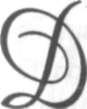
Devlet Kurucusu Atatürk
üşünüyordum, Mondros Mütarekesi ile bir
Osmanlı İmparatorluğu çökmüş. İmparatorluğu değil, "Vatan"ını kurtarmaya iradesini koymuş bir millet var.
Bütün Yurt'ta silahlı, silahsız, düşmana karşı
bir direnme mevcut.
Doğuda Ermenilere, batıda Yunanlılara karşı
savaş veriyoruz.
Millî Kurtuluş için kurulmuş sayısız dernekler
bin bir çareye baş vurarak Yurt'u korumaya çabalıyorlar.
Aralarında, "Kurtulma isteğinden gayrî hiçbir
anlaşma yok. Ortaya bir Mustafa Kemal Paşa çıkıyor.
Savaş meydanlarından şanla, zaferle gelmiş bir adam.
Orduyu eline alacak ve düşmanla savaşacak diyorsunuz. Yenecek, yenilecek ve vazifesini böylece yapacak diyorsunuz...
Hayır, böyle yapmıyor. Ne Saray'ın, ne de
başka bir kuvvetin birleştirmeye muvaffak olduğu
2 8 • İ S M E T B O Z D A Ğ
bölünmüş Türk Milletini bir bütün hâline getirmeye çalışıyor. Önce Müdafaa-yı Hukuk Erzurum Kongresi, sonra Sivas Kongresi, sonra Ankara'da bir
Türkiye Büyük Millet Meclisi Hükümeti...
Yeni bir Devlet kuruyor Mustafa Kemal Pa
şa!.. Yeni bir ordudan önce, YENİ BİR DEVLET...
6 5 0 yıl önce kurulan Osmanlı Devleti,
Mondros Mütarekesine koyduğu imza ile son sahi-
fesini kapamış, Mustafa Kemal Paşa, Erzurum
Kongresi'yle, yeni Türk Devleti'nin ilk sahifesini açmıştır. Şu benim karşımda oturan insan, her davranışı ile, yeni Devlet'in temeline bir taş daha koyuyor!
Bir anda içim, ulu bir saygı ve ulu bir hayranlıkla doldu!..
Aradan yıllar geçti. Bugün de kanaatim budur. Atatürk'ün dehası, parçalara bölünmüş millî iradeyi, bir BÜTÜN hâline getirmesinde parlar.
Mustafa Kemal gibi bir kumandan, bir ordu düzenleyebilir, düşmanı denize dökebilir, şerefli bir barış
sağlayabilirdi. Padişah da iner, yerine başkası otururdu. Fakat biz, bu devrimlerin yoğurduğu Demokratik güçlü Türkiye'ye erişemezdik!
Mustafa Kemal Paşa, bir savaş Tanrısı idi. Fakat ATATÜRK, büyük bir devlet adamı ve devlet kurucusudur. MİNNETİMİZİN KUCAĞINDA NUR
İÇİNDE YAT ATATÜRK'üm.
Celal BAYAR
Çürüksulu Mahmut Paşa'nın Öğütleri
üyük Millet Meclisi'nde Hükümet adına
yaptığım konuşma, İstanbul Hükûmeti'ni
telaşa düşürmüştü. Nitekim o günlerde
Vakit gazetesi adına Ahmet Emin Yalman, Sadrazam Tevfik Paşa ile bir görüşme yapmış ve İstanbul Hükûmeti'nin Londra Konferansı hakkındaki görü
şünü destekleyerek açıklamıştı.
Bu haber gelir gelmez, böyle bir tedbir almaya salahiyetim olmadığı hâlde, İstanbul gazetelerinin Anadolu'ya sokulmasını yasakladım ve bir şifre ile durumu cephede bulunan Atatürk'e bildirdim.
İstanbul Hükûmeti'ni tedirgin eden konuşmanın Ankara'daki yankıları da büyüktü. Güvenoyu sırasında beni destekleyen milletvekilleri arasında bile, böyle bir görüşme açılmasını uygun bulmayan, hiç değilse vakitsiz sayanlar vardı. Hele beni düşürmeye çalışan -hatırımda kaldığına göre- 60
kadar milletvekili, her tarafta benim için ateş püs-
kürüyordu.
30 • İ S M E T B O Z D A Ğ
İşte o günlerin birinde, Dışişlerindeki odamda geç vakit çalışıyordum. Yatsı ezanlarının okunduğu sıralarda idi. Kapı vuruldu ve içeriye tanımadığım biri girdi.
Uzun boylu, iyi giyinmiş, iyi intiba veren bir
insandı. Masamın yanındaki iskemleye oturdu.
Kendisini, "Çürüksulu Mahmut Paşa" olarak tanıttı.
Kendisini gıyaben biliyordum. Gazetelerde
de resimlerini görmüştüm. Fakat karşı karşıya hiç
gelmemiştik. Önce, beni işimden alıkoyacağı için
özür diledi. Sonra konuya geçerek anlatmaya başladı.
Gelişinin sebebi, benim Meclis'te yaptığım
konuşma idi. Bana "Padişahlık" ile, "Halife ve Sultanı" birbirine karıştırmamak gerektiğini, anlatıyordu.
Özet olarak diyordu ki: "Bugünkü halifenin
ve padişahın Ankara Hükûmeti'ne karşı tutumu
yanlış olabilir. Dünya meselelerini ve memleket meselelerini yanlış değerlendirmiş olabilir. İnsandır, hata yapar. Yerine daha ehliyetlisini getiririz, işler
yine yürür. Şahısların hatalarını belirlerken, müesseselere dokunmamak gerektir. Saltanat vazgeçemeyeceğimiz müesseselerdir. Ancak bunlarla bekamızı sağlayabiliriz. Devlet çarkının dönmesi için, Saltanat ve Hilafet gibi, herkesin ulaşamayacağı bir
mevkiin bulunması zorunludur. Bu sebeple de büyük bir dikkatle bu konulara dokunmaktan ve hele, bunları hırpalamaktan sakınmak lazımdır."
3 1 • B İ L İ N M E Y E N A T A T Ü R K
Kendisini sonuna kadar sabırla dinledim.
Bu dikkatli dinleyişimi, fikirlerine katıldığım
anlamına aldığından, daha da rahat konuşuyordu.
Bitirdiği zaman kendisine sordum:
- Başka bir diyeceğiniz var mı?..
- Hayır, dedi..
- Öyle ise size verilecek cevabım yoktur!
Başımı önüme eğdim ve kartondaki evrakı
okumaya başladım. Kalktı gitti...
Anlaşılıyordu ki, Meclis'teki konuşmadan
kocunanlar, kendisini bana göndermişlerdi!..
Ertesi günü, cephedeki Atatürk'ten bir şifre
aldım. Şifre, iki maddeden ibaretti. Birinci maddesinde, Anadolu Ajansı bültenlerinde yapılan yayınları görüp görmediğimi soruyor, ikinci maddesinde, Çürüksulu'ya ne çeşit bir muamele uygulamak istediğim öğrenmek isteniyordu..
Anadolu Ajansı bültenlerini görmemiştim...
O günlerde o kadar çok iş ve bakanlıkta o kadar az adam vardı ki, geceyarılarına kadar, bazen sabaha kadar çalışmak zorunda kalıyordum. Bu sebeple ajans bültenlerine bakmaya vaktim olmamıştı.
Bültenleri getirttim. Gerçekten Anadolu
Ajansı, Hükümet kararıyla Büyük Milet Meclisi'nde
yaptığım konuşmama aykırı haberler ve yorumlar
yayımlıyordu!.. Atatürk'e hemen cevap verdim. Bu
şifre cevabımda, Anadolu Ajansı ile temas edeceği-
32 • İ S M E T B O Z D A Ğ
mi, Çürüksulu için, şimdilik Ankara'dan uzaklaştırmasının yeterli olacağını bildirdim.
O zamanlar Anadolu Ajansı'ın Ağaoğlu Ahmet idare ediyordu. Kendisini Bakanlığa çağırdım.
Kıymet verdiğim bir insandı. Bilgi ve düşüncelerine
saygı duyuyordum. Dedim ki:
- Benden büyük, benden tecrübelisiniz!.. Bilginize, fikirlerinize saygım vardır. Fakat idare ettiğiniz Anadolu Ajansı'nda, Hükümet kararı ile Türkiye Büyük Millet Meclisi'nde yaptığım konuşmaların dı
şında ve hatta konuşmaya aykırı yayın yapıyorsunuz!.. Bunları, Hükümet kararı doğrultusunda düzeltmezseniz, maalesef işinize son vermek zorunda kalacağım...
Hiçbir açıklamada bulunmadı, fakat ertesi
günden itibaren haber ve yorumların havası değişti
ve Hükümet kararı doğrultusunda yapılmaya başlandı.
"İcra Vekilleri Reisi" Fevzi Paşa da cephedeki Atatürk'ten bir şifre almıştı. Atatürk bu şifresinde Çü-
rüksulu'nun Hilafet ve Saltanat lehinde propagandalar yaptığını bildiriyor ve hemen uzaklaştırılmasını istiyordu. Çürüksulu Mahmut Paşa'nın Ankara'da pek çok dostları, arkadaşları vardı. Sevilen bir şahsiyetti.
Kendisine ne suretle telkin edildiğini bilmiyorum, fakat bir kaç gün sonra Ankara'dan ayrıldı ve bir daha ortalıkta görünmedi.
33 • B İ L İ N M E Y E N A T A T Ü R K
Atatürk, belki Türkiye'de Cumhuriyeti ilk
düşünen insan değildi. Fakat en büyük Cumhuriyetçi idi.
Bunları söylemekten maksadım, bazılarının
sandığı gibi, Cumhuriyet, bir gece evvel düşünülüp
ertesi günü bir kaç maddelik Anayasa tadili ile ger
çekleştirilen bir siyasi devrim değildir. Daha Erzurum Kongresi'nde "Hâkimiyet kayıtsız şartsız milletindir" formülünü koyduğu an, rejimin kendi kafasındaki adı CUMHURİYET idi.
Bunu gerçekleştirmek için, hiçbir fırsatı ka-
çırmadı ve bunlardan faydalanmasını bildi. Serbest
Fırka denemesi de Cumhuriyeti, Demokratik kişili
ğine kavuşturmak çabasından başka bir şey değildir! Nur içinde yatsın...
18.4.1979/Çiftehavuzlar
Celal Beyefendiden Haluk Şaman
ile birlikte dinlenmiştir.
tatürk'le bir gün Çankaya'da konuşuyorduk. Söz döndü dolaştı, İsmet Paşa üstüne geldi. Ben genellikle İsmet Paşa konusuna
değinmek istemezdim ve sözün bu konuya gelmesinden de memnun olmadım. Bu konuda bir şey sorarsa, cevap vermek zorundaydım.
Atatürk'e düşündüklerimi açıkça söylemeye
alışmışım, söyleyeceğim bir söz İsmet Paşa'nın aleyhinde olursa, kulağına gidebilir, kendisini Atatürk'le çakıştırdığımı sanır. Oysa ben özellikle bu iki arkadaş
arasına, hiçbir suretle girmemeye özel bir dikkat harcamışımdır!..
O günlerde Parti seçime gidiyordu; adaylar
tespit edilmiş, fakat daha açıklanmamıştı. Atatürk
de bu konu üstünde çalışıyordu. Bana dedi ki:
- Sırrı Benli'yi bilirsin, (bir ara İktisat Vekilli
ği yapmıştı) güzel konuşur, konuşmasına daima fikir kaymasını bilir; hırslıdır ama, yeteneklidir de...
35 • B İ L İ N M E Y E N A T A T Ü R K
Ben, bu vasıflarından ötürü adını listeye yazdım;
Milletvekili çıksın diye...
Fakat ne oldu bilir misin?
İsmet Paşa ile Recep Peker, dün geldiler ve
bana "Sırrı Belli'yi listeden çıkar." dediler...
Biri Parti'min Genel Sekreteri, biri Başve-
kil'im. Bir adamı istemiyorlar ve Meclisten uzak tutmakta birleşiyorlar!
Sordum:
"Niçin Milletvekili olmasını istemiyorsunuz?"
Birbirlerinin yüzüne baktılar, sonra İsmet Pa
şa: "Çok konuşuyor." dedi.
Şaştım kaldım.
Sırrı Belli, çok konuşuyorsa, saçma sapan konuşmuyor elbette... Aklı başında sözler ediyor.
Ne istiyor benim Başvekil'im, Genelsekre-
ter'im? Meclis'te sessizlik mi?
İki en önemli noktada bulunan bu arkadaşlarım, Sırrı Belli'nin konuşmalarına cevap mı veremiyorlar ki, milletvekili listesinden çıkarmam için beni sıkıştırıyorlar?
Akıl erdiremedim ve hele ortak kanaate varmalarına da hiçbir mana veremedim. Ama tartışma çıkarılacak konu değildi, Başvekil'imi, Genel Sekreter'imi bir milletvekili adayı için kıramazdım; çıkardım Sırrı Bellinin adını adaylar arasından...
Ama sen söyle Celal Bey,
Bu bana yapılır mı?
22.10.1972
Celal Bayar'dan dinlenmiştir.
ltıntaş Muharebesi'nin kaybedildiği günlerde olayı Atatürk'ün ağzından dinledim. Atatürk hem anlatıyor, hem de arada sırada taklidini yapıyordu:
- Sabaha kadar arkadaşlarla cephe haberlerini değerlendirdikten, sabahleyin, son kahveyi de içtikten sonra: "Bu iş bitti, İsmet muharebeyi kaybetti." dedim ve cepheye hareket ettim. Benim cepheye geldiğmi duyunca İsmet Paşa büyük bir telaşa kapılmış, benim kendisini kurşuna dizdirmek için
gelmekte olduğumu sanmış!..
Karargâha girdiğim zaman, hakikaten acınacak hâlde idi. İki gün iki gece uyumamış, dinlenmemişti. Üstelik kendisini yenik sayıyor ve akıbetini düşünüyordu. Gerçekten de büyük bir hata yapmış,
düşmanla müsavi kuvvetlerle dövüştüğü hâlde, kıtalarını zamanında savaşa sokamamıştı! Bu yüzden de ordu perişandı. Askerler çözülmüşlerdi.
37 • B İ L İ N M E Y E N A T A T Ü R K
İsmetin bu hâlini görünce, moralim kurtarmak için:
- Tebrik ederim, zaferi kazandın! dedim.
İsmet Paşa, iki eliyle kendisini gösteriyor,
"Ben mi, ben mi?" derken gözleri yaşarıyordu.
- Evet, sen dedim. Muzaffer bir kumandansın! Git çadırına istirahat et. Biraz uyu, sonra olup biteni seninle konuşuruz.
Söylediklerimin doğru olup olmadığını anlamak için yüzümü araştırıyordu. Ne diyeceğini şaşırmıştı. Yaverime: "Paşayı yatırmasını, her türlü istirahatını temin etmesini" söyledim. Çıkıp gittim.
Hemen öteki komutanları topladım, durumu
gözden geçirdim. Orduyu bu mevzilerden geriye
çekmek ve bozgundan kurtarmak lazımdı. Böylece,
gereken emirleri verip bozgunun önüne geçebildim.
Topçu İhsan bana geldi. "Verin İsmet Paşa'yı
bana, İstiklal mahkemesinde muhakeme edeyim"
dedi.
Atatürk'ün bu anlattıklarına ekleyecek bir
müşahedem daha var.
Altıntaş muharebelerinin kaybedildiğini duyduğum gün, Bakanlık'ta çalışıyordum. Hemen durumu anlamak için o zamanki Ziraat Mektebi'ndeki bir odada çalışmakta olan Millî Savunma Vekili
Fevzi (Çakmak) Paşanın odasına gittim.
Kapıyı vurdum, duymadı.
38 • İ S M E T B O Z D A Ğ
İçeri girdim. Fevzi Paşa başını iki eli arasına
almış düşünüyordu. Selamsız sabahsız:
"Paşam, ne oluyor?" deyince, birden başını
kaldırdı. Bana:
- Daha ne olsun, dedi. Gül gibi hazırlayıp
emrine verdiğim kıtaları savaşa sokamadı, ordumuzu perişan etti.
Fevzi Paşa bu fikrini bir daha hiçbir yerde
söylememiştir. Çünkü Atatürk bunun duyulmasını
istememiş ve İsmet Paşa'nın adını lekelemeyi, civanmertliğine yedirememişti.
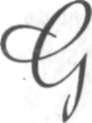
22.9.1972
Celal Bayar'dan dinlenmiştir.
erek İktisad Vekili olarak ve gerekse Başvekil olarak Avrupa'ya her gittiğimde, şurada, burada Osmanlı Hanedanı mensuplarına rastlıyordum. Bu, Türkçe konuşan komşu masalar, beni çok ilgilendirirdi. Yanımda bulunan
Sefaret mensuplarımız açıklarlardı:
- Hanedandan, efendim...
Ben, yeni Türkiye Cumhuriyeti'nin güçlülü
ğüne inanıyordum. Bir avuç Hanedan mensubunun
onun için bir tehlike olabilmesi mümkün değildi.
Oysa bu insanlar, yurda sokulmadıkça, yabancı
memleketlerde bazıları sefalet içinde, bazıları yaşama güçlükleri içinde bırakıldıkça, olayı dışarıdan değerlendirenler, yeni Türkiye Cumhuriyeti'nin bir
avuç insandan korktuğu sonucuna varabilirdi.
Başvekil olduğum günlerden birinde durumu
Atatürk'e açtım. Gerek yüz elliliklerin ve gerekse Ha-
nedan'ın affı sırası geldiğine inandığımı işaret ettim.
4 0 • İ S M E T B O Z D A Ğ
Başını önüne eğerek uzun, uzun düşündü.
Sonra çok samimi bir sesle:
- Yap bunu çocuk, dedi. Devrinin şerefi olur!
Ben, Başvekillik devrimin şerefini, ününü dü
şünmemiştim. Benim için önemli olan, yurdun bir
davasının çözümlenmesi idi.
Çalışmalara ve temaslara geçtim. Bir yandan
da Adalet Bakanlığı'na tasarının hazırlanmasını söyledim. Büyük bir reaksiyon koptu. Meclis'te bazı arkadaşlar, bunun zamansız bir karar olduğunu iddia ediyorlardı ve yaptıkları hata ve işledikleri günahın
mürekkebi kurumadan bu insanları bağışlamaya
yanaşmayacaklarını söylüyorlardı.
Başyazar milletvekillerinden bazıları daha da
ileri gittiler ve beni makamımda ziyaret ederek işi
tehdide kadar götürdüler. Aka Gündüz ve Yunus
Nadi bunların arasında idi.
- Eğer böyle bir karar çıkarmak için direnir-
seniz, sizin şahsınızın aleyhinde yazı yazarız.
Ben kendilerine:
- İstediğinizi yazın, istediğinizi konuşun, fakat
oylarınızı bana verin, dedim. Grupta karar aldıktan
sonra, karar ne ise, ona herkes boyun eğecek...
İşi çok ciddi tuttuğum hâlde, küçük bir taviz
vermek zorunda kaldım. Hanedandan yalnız kadın
olanların yurda girmelerini, erkeklerin yurt dışında
kalmalarının uygun olacağı görüşünü kabul ettim.
Böylece kanun çıktı...
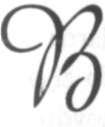
22.9.1972
Celal Bayar'dan dinlenmiştir.
ir gün, Dahiliye Vekili Şükrü Kaya ile görüşüyorduk. Bana yarı şaka:
- Beyefendi, Avrupa'da günlerinizi nasıl
geçirdiniz?.. Sultan hanımlar ne diyorlar?.. diye sorunca, şaşıp kaldım. Gerçekten Zürih'de rastladığım Hanedan'dan bir hanım beni görmek istemiş, ben
de kendisini kabul etmiştim. Fakat Şükrü Kaya'nın
bundan nasıl haberi olmuştu?. Sordum:
- Refi Cevad Ulunay'ı aralarında istihbarat
göreviyle kullanıyorum. Sizin görüşmenizi de raporuna yazmayı ihmal etmemiş, dedi.
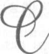
19 Eylül 1972
Celal Bayar'dan dinlenmiştir.
umhurbaşkanı olduğum ilk yıllarda idi.
Bir gün Cemal Kutay, Çankaya'da ziyaretime geldi. Masaya bir tabanca koydu:
- Bu tabancayı size Kuşçubaşı Eşref Bey hediye ediyor. Ve lütfen kabul buyurmanızı istirham etmekte...
Anlamamıştım! Eşref Bey'le bir tanışmamız
yoktu. Bu tabancayı bana niçin gönderiyordu.
Cemal Kutay anlattı:
- Demokrat Parti'nin muvaffak olmasını, Eşref Bey Türk Milleti adına büyük bir başarı sayıyor.
Bundan son derece memnundur. Bütün tarih boyunca ilk defa sivil bir politikacı Devlet Başkanı se
çilmiştir. İlk defa millî irade işlemiştir. Böyle bir netice, çok yakın bir kaç yıl önceye kadar rüya idi. Bugün bu gerçekleşmiştir. Bu sebeple Eşref Bey memnun. Size bu tabancayı, gerekince hayatınızı ve makamınızı korumak için gönderiyor.
43 • B İ L İ N M E Y E N A T A T Ü R K
Eşref Bey'in ne demek istediğini anlamıştım.
Güldüm.
- Teşekkür ederim, dedim, inşaallah kullanmaya lüzum kalmaz.
Pek yazık ki tabancayı kullanmam gerekti,
ama kullanamadım. Şimdi Umurbey Müzesi'ndedir.
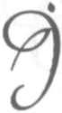
5.3.1982
Bayar'ın evinde Nilüfer ve
Ahmet Gürsoy'la
smet Paşa, Dışişleri Bakanı Tevfik Rüştü
Aras'la birlikte Rusya'ya gitmişti. Tevfik Rüştü, sosyalist olduğunu söylemezdi ama, sorulunca da saklamazdı. Onun kanaati bu idi. Bu gezide İsmet Paşa'ya sosyalizmi sevdirmeye çalıştığını sanıyorum. Nitekim bu gezi sırasında Stalın'le de
görüştüler ve Sovyet Rusya'da geniş bir inceleme
yaptılar.
İsmet Paşa, "Kuvvetli Devlet" fikrinden yanadır.
Marksizme meyil gösterdiğini sanmıyorum.
Fakat Rusya'da ekonomik güçlerin devlet elinde
toplanmasını kendi açısından beğendiğini düşünüyorum. Çünkü ekonomik güçler, ne kadar hükümetin elinde olursa, milleti idare etmek de o kadar kolaylaşır. İsmet Paşa geziden bu espri ile döndü.
O zamana kadar izlenen ekonomik politika
4 5 • B İ L İ N M E Y E N A T A T Ü R K
ile hemen hiçbir şey yapılamamıştı. Bir kere de bu
yolu denemek istiyordu. Liberal Ekonomi'den yana
olan İktisat Vekili Şeref Bey, İsmet Paşa'nın baskısı
ile, birdenbire, birbiri ardına, "devletçi kanunları"
Meclis'e getirdi ve kanunlaştırdı.
Ben İktisat Vekili olarak işe başladığım zaman, elimde, oldukça katı olan bu kanunlar vardı.
Ben, bu kanunları elden geldiğince yumuşatarak
uyguladım ve Halk ile Devlet'i, ortak bir ekonomiye doğru götürdüm.
Atatürk de bu uygulamamı beğenmiş ve bana
arka çıkmıştır.
8.10.1983/Celal Bayar'ın evi
Dr. Mükerrem Sarol, Haluk Şamanla
birlikte dinlenildi.
ayar, eski günlerin olaylarına değinen bazı konuşmalardan sonra, özellikle İkinci Dünya Savaşı sırasında İsmet İnönü'nün
yürüttüğü iç ve dış politika üstündeki, -genellikle
bilinen- düşüncelerini ve müşahedelerini anlattıktan sonra, Demokrat Parti'nin kurulmasına atlayarak şöyle devam etti:
- Şükrü Saraçoğlu benim eski dostumdur.
Onu da, onun İçişleri Bakanı Hilmi Uran'ı da, İstanbul Meclisi Mebusanı'ndan tanırım..
Şükrü Saraçoğlu, Avrupa'da okumuş, bilgili
bir Ege çocuğudur. Ben, Babası Saraç Ahmet Efen-
di'yi de bilirdim. İzmir'de Yunan kuvvetine karşı bir
direnme gücü yaratmayı düşündüğüm sıralarda şehirde işbirliğine çağırdığım insanlar arasında, Sara
çoğlu da vardı. Benim gibi, bir maceraya katılmayı
uygun görmedi; İzmir'de kaldı. Ben Galip Hoca macerasına giriştim. Sonra Balıkesir Kongresi'nde Akhisar cephesi komutanlığına getirildiğim günlerde 47 • B İ L İ N M E Y E N A T A T Ü R K
idi, Şükrü Saraçoğlu'ndan bir telgraf aldım. Telgrafta, "Bana katılmak için Demirci Efe'nin karargâhına geldiğini", bildiriyordu.
Saraçoğlu'nun bana telgraf çekmesi sebepsiz
olamazdı. Eğer efeler kendisini iyi karşılamış olsalardı, niçin bana telgraf çeksindi... Beni bekler, benimle istediği gibi konuşurdu. Demek Demirci Efe ve kızanları bundan kuşkuya düşmüşler, sıkıştırmışlardı ki, Saraçoğlu benim dostum olduğunu onlara ispat etmek ihtiyacını duyuyordu. Hemen kendisine "muvaffakiyetler dileyen, bir telgraf çektim ve ardından hemen yola çıkıp Demirci'nin karargâhına ulaştım.
Durum, düşündüğüm gibi idi. Efe, Saraçoğlu'ndan, "Karşı taraf casusu" olabileceği düşüncesi ile kuşkulanmıştı; gözaltında tutuyorlar, kendisine
hiç de iyi muamele etmiyorlardı. Derhal Efe'yi ve
kızanları tatmin edici sözler söyledim. Babası Saraç
Mehmet Efendi'yi bilenler vardı... Ben de Saraçoğlu
için "Bizdendir" diye şefaat edince, işi yoluna koyduk...
Gel zaman, git zaman, İstanbul Meclisi Me-
busanı açılınca, İstanbul'a gelmiştim. Benim ardımdan Şükrü Saraçoğlu da mebus olarak İstanbul'a geldi, Fındıklı'da buluştuk. İstanbul Meclisinde büyük akisler yapan konuşmamı yaptığım günün ertesi idi. Bazı tanınmış İttihatçılar, beni Fındıklı'da Meclis Mebusan salonunda buldular ve bana, İtal-48 • İ S M E T B O Z D A Ğ
yanlardan haber sızdırdıklarını; İngilizlerin, Meclisi
Mebusanı dağıtma kararı aldıklarını, bazı ittihatçıları da yakalayıp hapsedeceklerini bildirdiler; ve dediler ki: "Sen, arananların başında geliyorsun, seni saklayacağız." Tekliflerini kabul ettim.
Aynı arkadaşlar, Rauf Bey'e de durumu haber
vermişler, saklanmasını hatırlatmışlar; fakat Rauf
Orbay: "benim saklanacak bir suçum yok... Eğer tu-
tuklayacaklarsa, gelsinler, tutuklasınlar, işte hurdayım... Onların beni tutuklamaları, medeni âlemde büyük yankı yapar, kendileri zarar ederler!" demiş!..
Nitekim dediğini yaptı, tutuklandı, Malta'ya
sürüldü... Fakat onun "Âlem-i Medeniyet" dediği Batı'da bu tutuklanma olayı, bir tek satır yazının yazılmasına bile, sebep olmadı... Sonra biliyorsunuz, Atatürk'ün yardımı ile kurtulup Anadolu mücadelesine katılmıştır.
Mebuslar içinde Rauf Bey gibi düşünenler
çoktu. Nitekim ben de bazı arkadaşlara durumu haber verdim ve benimle beraber Anadolu'ya geçmelerini teklif ettim; maalesef herkes bir başka hava çalıyordu. Birlikte Anadolu'ya geçme teklifi yaptıklarımın arasında Şükrü Saraçoğlu ile Hilmi Uran da vardı... Hiç unutmam, dış kapıya yakın bir yerde
ayakta duruyorlar, kendi aralarında konuşuyorlardı. Beni görünce, teveccüh ettiler, ben, kendilerine durumu kısaca anlattım. Her ikisi de teklifimi, gü-
49 • B İ L İ N M E Y E N A T A T Ü R K
lümseyerek geçiştirdiler ve bana "iyi yolculuklar"
dilediler!
Size şimdi, belki de bilmedğiniz bir şey söyleyeyim, ne Şükrü Saraçoğlu, ne de Hilmi Uran, Kurtuluş Savaşı'na katıldı. İkisi de yurt içinde oldukları hâlde, bir köşede sonuçları beklemeyi, kurtuluş hengamesine katılmaktan daha akıllıca buldular. İkisi de başka başka yönleri ile memlekete hizmet verebilecek vasıfta oldukları için, bu yanlarına hiçbir zaman dokunmamışımdır. Hatta Demokrat
Parti'nin ilk yıllarında aramızda çetin müzakerelerin
geçtiği sıralarda bile, bu zaaflarından yararlanmayı
bir an olsun düşünmedim...
Gel zaman, git zaman, Kurtuluş Savaşı bitti.
Birinci B.M.Meclisi kendi kendisini fesh etti. İkinci
Büyük Millet Meclisi için seçim hazırlıklarına girişil-
diği günlerdi. Atatürk bana, İzmir ve yöresini gezip
halkın nabzını dinlemek ve çevrenin tutabileceği milletvekillerinin adlarını tesbit etmek vazifesini verdi.
Ben seyahata çıkmak hazırlıklarını sürdürürken, rahmetli Millî Eğitim Bakanı Necati Bey'in benim görevimde gözü olduğu ve Atatürk'e Kâzım Özalp aracılığı ile başvurup, kendisinin gönderilmesini sağlamaya çalıştığını öğrendim. Necati Bey, benim İttihatçı olduğumu, İzmir'de de sözünden çıkamayacağım İttihatçılar bulunduğunu ileri sürüyor ve benim gönderilmemin mahzurları olduğunu söylüyormuş!..
50 • İ S M E T B O Z D A Ğ
Ben bir süre, teşebbüsün ne netice vereceğini
bekledikten sonra, kendi kendime kararı verdim:
Eğer Atatürk görevi benden alırsa, milletvekili olmayı da reddedecek ve parlamento dışında kalacaktım... Fakat Atatürk'ten hiçbir tepki gelmedi. Bunun üzerine kendisini ziyaret ettim ve emirleri gere
ğini yerine getirmek için, İzmir'e gideceğimi söyledim. Ne zaman hareket edeceğimi öğrenmek istedi ve iyi yolculuklar diledi. Bunun üzerine kendisine
şunları söyledim:
- Biliyorsunuz Paşam, dedim. İzmir, İttihat ve
Terakki'nin İstanbul'dan sonra ikinci merkezi sayılır. Ben orada Kâtib-i mesullük vazifesinde bulundum. Bir çok ittihatçı ile dostum ve kendilerini, bütün değerleri ve kusurları ile yakından tanırım.
Bunların içinde, davamıza hizmet edecek insanlar
bulunabilir... Ben, size raporumu verirken, davamıza hizmet edeceğine inandığım arkadaşlar olursa, bunları tereddütsüz size tavsiye edeceğim. Durumun böylece bilinmesini isterim..
Atatürk, benim bu konuşmayı neden yaptığımı hemen anlamıştı... Güldü... Bir süre yüzüme baktıktan sonra:
- Yalnız sen mi İttihatçısın?.. -dedi- Ben de
İttihatçıyım!..
Vazife gezisine böyle başladım. Dönüşte Atatürk'e sunduğum isimler arasında bazı ittihatçılar da vardı ve bunlardan biri de, Kurtuluş Savaşı'na
51 • B İ L İ N M E Y E N A T A T Ü R K
katılmayı her nedense uygun görmemiş Şükrü Sara
çoğlu'dur... Saraçoğlu, böylece İkinci Büyük Millet
Meclısi'ne milletvekili olarak katılmış ve bildiğiniz
hizmet grafiğini çizmek fırsatını bulmuştur.
Şimdi size, General Rafet Bele'den öğrendiğim
bir gerçeği nakledeceğim... Demokrat Partinin kurulduğu ilk yılların birinde, herhalde 1946 ya da 1947 yılında İsmet Paşa Çankaya'da bir toplantı düzenlemiş ve toplantıya, eski general arkadaşlarını, bu arada Rafet Bele'yi de davet etmiş... Toplantıda bulunanlar arasında Şükrü Saraçoğlu, Recep Peker, Nihat Erim, Hilmi Uran ile, zamanın bazı kabine üyeleri ve
Milletvekili olmuş emekli generaller varmış...
İsmet Paşa, herhalde daha önce müzakare etmiş ve karara varmış olacak ki sözü, Başbakanlıktan yeni çekilen Şükrü Saraçoğlu'na vermiş... Sara
çoğlu, küçük bir mukaddimeden sonra, benim ve
Mareşal'in (Celal Bayar-Fevzi Çakmak) komünist
olduğumuzu, netekim komünist olduğu bilinen bazı ünlü komünistlerle temas hâlinde bulunduğumuzu, ortak teşebbüslere giriştiğimizi, benim dokunulmazlığımın kaldırılması ile Mareşalle birlikte komünist olmaktan mahkemeye verilmemizin uygun olacağını söylemiş...
İsmet Paşa konuşmuyor, müzakereleri dikkatle takip ediyormuş... Herkesin gözü, bu icraatın kendisinden beklendiği Recep Peker'e dikilmiş...
Peker, tereddütsüz konuşmuş:
52 • İ S M E T B O Z D A G
- Sizden belgeleriniz nedir, diye bir şey sormuyorum. Çünkü bu iki insanı burada bulunan herkes gibi ben de yakından tanırım ve bunların
komünizm ile hiçbir ilişkileri olmadığını ve olamayacağını bilirim. Eğer benden böyle bir iş yapmam istenecekse, peşinen söylüyorum, ben böyle bir şey-yapmam, yapamam!..
İsmet Paşa hemen sözü değiştirmiş ve konu
kapanmış..
Bu olay bana anlatıldığı zaman bile, Saraçoğlu'nun parlamentoya girmesine vesile olduğum için pişmanlık duygusu duymadım. Çünkü bana karşı
tutumu ve düşüncesi ne olursa olsun, bazı hizmet
mevkilerinde memlekete yararlı olmuştur ve ben
kendisini Atatürk'e tavsiye etmekle, iyi bir iş gördü
ğüme hâlâ inanırım...
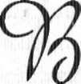
30.9.1972
Celal Bayar'dan dinlenmiştir.
ana bunu Kuşçubaşı Eşref anlattı. Söyledikleri aşağı yukarı şu: Enver Paşa, Balkan Harbi'nden sonra orduda büyük bir tasfiye hareketine girişmişti. Bu tasfiye hareketi bir bakıma çok yerinde olmuştur. Fakat bu arada bazı hatalar da yapılmıştır.
İşte bu günlerin birinde, Binbaşı İsmet Bey'in
de (İsmet İnönü) ordu dışı edilmek üzere olduğunu
öğrendim. Binbaşı İsmet ile özel bir dostluğum yoktu ama, uzaktan çalışmalarını takip ediyordum. Bana makul bir insan olarak görünürdü.
O günlerde bana Binbaşı Kâzım (Kâzım Or-
bay) geldi. Enver Paşa'nın bu küçük kardeşi dos-
tumdu. Oradan buradan konuşurken, İsmet'in tasfiye edilecekler arasında olduğunu ve buna üzüldü
ğümü söyledim. Beraberce bir çare aradık ve sonunda, birbirimizden habersizmişçesine Enver Paşaya 5 4 . İ S M E T B O Z D A Ğ
gitmeyi ve tasfiye edileceklerin imzalanması sırasında İsmet'i kurtarmayı kararlaştırdık.
Dediğimiz gibi yaptık. Ben ayrı, Kâzım ayrı
olarak Enver'in makamına gittik. Personel şubesi de
ayarlanmıştı. Biz orada iken liste kendisine getirilecekti. Nitekim geldi. Enver Paşa, listeyi imzalarken ben, Binbaşı İsmet Paşa'nın da tasfiye edilecekler
arasında olduğunu işittiğimi ve buna inanmadığımı
söyledim. Enver Paşa, "Doğrudur, işte evrakı da
önümde" dedi. Bir taraftan ben, bir taraftan Kâzım, yazık olacağını, kıymetli bir arkadaş olduğunu,
memlekete hizmet edebileceğini, uzun uzun anlattık ve bağışlanması için israr ettik. Enver Paşa:
- Madem bu kadar ısrar ediyorsunuz, pekâlâ
kalsın, dedi.
Böylece Binbaşı İsmet tasfiyeden kurtulmuş
oldu ve en sonra İsmet Paşa olarak Cumhurbaşkan-
lığı'na kadar yükseldi.
Top Sesleri Arasında Köy Ekonomisi
şte birkaç cümle ile belirlediğim bu Ankara'da Ben, "Umuru İktisadiye Vekili" olarak, "Havza-i Fahmiye" Zonguldak Maden Ocaklarında çalışan işçilerin hayat şartlarını düzeltecek kanun tasarısını, Köy Ekonomisi'nin düzenlenmesi için el sanatlarının teşvik ve geliştirilmesi kanun tasarılarını hazırlıyordum. Benim işim bu
idi.
Savaş kıyamete kadar sürecek değildi. Bunları uygulayacak zamanlar önümüzde idi. İşte Atatürk'e gece yarısı yaptığımız ziyaretler sırasında bunlardan kendisini haberdar ederdim.
Ne kadar sevinerek, zevk duyarak dinlerdi.
Bunların hemen kanunlaşmasını, hemen uygulamaya geçirilmesini isterdi. İktisadın, Devlet Hayatındaki büyük yerini çok iyi biliyordu.
Bir gün, Bakanlar Kurulu toplantısını idare
ederken arkadaşlara:
5 6 • İ S M E T B O Z D A Ğ
"Beyler, dedi. Her vekil işinden mesuldür.
Fakat bazı işler vardır ki, her şey, o işin düzgün gitmesine bağlı olur. Böyle olunca, hepimiz o işin gereği gibi yürümesini sağlamak zorundayız. İktisat bunlardan biridir. Celal Bey'in hazırladığı bazı tasarılar var. Bunların bir an önce kanunlaşuması lazımdır. Hepinizin kendisine yardımcı olmanızı rica ediyorum."
Bu söylediğim günler, Ankara'da top sesleri
dinlediğimiz günlerdi.
Köylü Milletin Efendisidir
en vekâletten ayrıldım. Yerime başka bir
arkadaş geldi, o tarihlerde Mustafa Kemal
Paşa, Büyük Millet Meclisi Başkanı olarak, hükümetin bir yıllık çalışmaları ve gelecek çalışmaları üzerinde bir nutuk verirdi. Bu nutkun dokümanları vekâletler tarafından Meclis Başkanı'na verilir, Meclis Başkanı da bunları toplayarak özetler,
temennilerini ekler, yapılanlarla, yapılması gerekenleri Büyük Millet Meclisi'ne bilgi olarak sunardı.
İşte Mustafa Kemal Paşa da bu nutkunu hazırlarken, Umuru Iktisadiye'den gelen notları yeterli bulmamış, beni çağırtmış.. Gittim. Yanında Recep Peker ve şimdi kim olduğunu hatırlamadığım başka
bir arkadaş vardı. Bana:
- Yıllık konuşmamı hazırlıyorum. İktisada ait
Çalışmalarımız bana yeterli görünmedi. Sen bana bazı tasarılardan bahsetmiştin. Bazı çalışmalar yapılmıştı. Onları yaz getir, dedi.
Emirlerini aldım ve o gece hazırladığım muhtırayı ertesi günü kendisine takdim ettim. Bana: 5 8 • İ S M E T B O Z D A Ğ
"Okuyunuz" dedi. Okumaya başladım. Çok ilgilendiğini anlıyordum. Çünkü önemli gördüğü konuları dinlerken, "Hııı" diye bir ses çıkarır, böylece fikri benimsediği belli olurdu. Sonuna kadar dinledi.
Bittiği zaman: "Ben bunları yaptık diye nutkuma ge
çireceğim" dedi.
Ben, bir süre durakladım. Sonra: "Paşam
dedim, savaş günleri yaşıyoruz. Bütün gücümüz
gayretimiz vatanın düşmandan kurtulmasına bağlanmıştır. İktisat devlet hayatında hangi değeri ihtiva ederse etsin, savaşın gölgesinde ve ardında kalıyor. Bu arz ettiklerim düşünülmüş, tasarlanmış, tasarı hâline getirilmiştir. Ancak kanun hâline gelmemiş ve uygulanmamıştır. Bu itibarla, hazırlık hâlinde olduğunu belirtmek daha gerçek olur sanıyorum." dedi. Recep Peker de oturduğu yerden
"Celal Bey'in hakkı var" diye beni destekleyince, Atatürk: "Peki öyle yapalım. Ama köylüyü Milletin Efendisi yapmak savaşta da barışta da hedefimiz
olmalıdır" dedi.
Bir Bayrağın Altmda Ölmek
Demin de söylediğim o çalkantılı karanlık
günlerde idi. Çoluk çocuğumuzu düşman işgali altındaki topraklarımızda bırakmıştık. Mektuplaşa-mıyorduk, haberleşemiyorduk, dertlerine erişemi-
yorduk. Memleket büyük bir çalkantı içinde idi.
İhanet yangınlarıyla sarılmıştık. İşte böyle günler-
59 • B İ L İ N M E Y E N A T A T Ü R K
den birinde Bakanlar Kurulu toplantısında Atatürk'ün şunları söylediğini bugün gibi hatırlıyorum:
- Arkadaşlar, hiçbir zaman keder (boyun eğmek, yılgınlık anlamına) etmeyeceğiz, sonuna kadar tuttuğumuz yolda yürüyeceğiz, hakkın yere düşmesine razı olmayacağız. Yerli ve yabancı düşman karşısında hakkımızı müdafaa edeceğiz. Son vardığımız hudutta da eğer yenme ümidimiz kalmamışsa, o zaman bir Türk Bayrağı'nın altına sığınarak İstiklal uğrunda canımızı vereceğiz!
Bunları dramatik bir hava içinde konuşmuyordu. Sakindi ve her zaman olduğu gibi, güven verici idi. "Akşam yemeğini istasyonda yiyelim" der gibi, tabii idi. Yalnız mavi gözlerinde o karar şimşe
ğinin elifi vardı.
Hepimiz, aynı düşüncenin etrafında birleşti
ğimizi söyleyerek dağıldık. İçimde, ulu saatlerin heyecanı vardı. Biliyordum ki Mustafa Kemal Paşa, zaferden hiçbir kuşku duymuyor, fakat kader arkadaşlarına, içine girdiğimiz dönülmez yolu gösteriyordu.
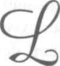
17.9.1972
Sayın Bayar'dan evinde
dinlenmiştir.
ozan Barışı'nın Büyük Millet Meclisi'nde
müzakeresi yapılacaktı. Atatürk, bir gün
önce CHP Meclis Grubu'nu topladı ve
Meclis müzakerelerinde söz alacakların isimlerini
tespit etmeye başladı.
Atatürk, bu önemli konu üzerinde yapılacak
müzakerelerin seviyeli geçmesini istiyordu. Onun
için, oturduğu Başkanlık yerinden, kimlerin müzakereler sırasında söz alacağını, önündeki bir kağıda dikkatle kayıt ediyordu.
Nihayet gözleri benim üzerimde durdu:
- Celal Bey, siz de konuşun!
Ben Lozan Konferansı'nda "İktisat Müşaviri"
olarak bulunmuştum. Fakat Konferans'ın sonuçları
beni tatmin etmemişti. Bu sebeple söz almak istemiyordum. Fakat Gazi, "Konuş" deyince, "Peki" dedim.
61 • B İ L İ N M E Y E N A T A T Ü R K
Atatürk, konuşacakların isimlerini bir kâğıda
yazıyor ve yanıbaşlarına da Barış Antlaşmasının lehinde mi, yoksa aleyhinde mi konuşacaklarını da ayrıca işaret ediyordu. Bana sordu:
- Lehinde mi konuşacaksın, aleyhinde mi?..
- Aleyhinde, efendim!.
Durakladı. Demek, benden "aleyhte bir konuşma" beklemiyordu. Sonra bana:
- Nasıl olur -dedi- Siz konferansa görevli katılmış bir insansınız... Aleyhinde konuşmanız uygun olmaz!.
- Öyleyse, müsaade ediniz de söz almayayım...
Atatürk, müsamahalı bir adamdı; makûl kar
şıladı ve "peki" dedi.
Salonda bazı milletvekili arkadaşlar ellerini
kaldırarak söz almaya çalışıyorlar, Atatürk bazılarını görmezden geliyor, bazılarının adlarını yazıyordu. Bu parmak kaldırıp yüksek sesle söz isteyenlerin en hararetli heveslilerinden biri de Balıkesir Milletvekili Süreyya Örgeevren'di. Durmadan: "Ben de konuşmak istiyorum." diye parmağını havada tutuyordu.
Nihayet Atatürk sordu:
- Konuşmak mı istiyorsunuz?
- Evet, efendim. Madem ki Celal bey konuşmak istemiyor, ben onun yerine konuşayım.
62 • İ S M E T B O Z D A Ğ
- Celal Bey, aleyhinde konuşacaktı. Siz, lehinde mi aleyhinde mi konuşacaksınız?
- Lehinde de konuşurum efendim, aleyhinde
de!..
Atatürk'ün yüzü karıştı. Hiçbir şey söylemedi
ama; ne düşündüğü yüzünden okunuyordu:
- Mademki Celal Bey'in yerine konuşmak istiyorsunuz, bari aleyhte konuşun da hak yerini bulsun!
- Teşekkür ederim efendim, aleyhte konuşacağım!, dedi. Dediği gibi yaptı; düşünemeyeceğim kadar ağır konuştu Lozan Antlaşması için...
4.12.1981
Çiftehavuzlar
24 Aralık 1920... Bu günü unutmuyorum; çünkü bu tarih, yalnız benim hayatım bakımından önemli olmakla kalmaz, Kurtuluş Savaşı-
mız'da Çerkez Ethem bölümünün önemli günlerinden biridir.
İktisat Vekili idim ve yanan Milli Eğitim Bakanlığı binasında tek bir odayı, Nafıa Vekili Paşa ile paylaşıyordum. Gündüzleri Paşanın dostları ve
milletvekilleri gelip gittikleri için, doğru dürüst iş
göremiyordum. Bu yüzden Paşa evine gittikten sonra, geceyarısına kadar mum ışığında çalışmak zorundaydım.
Yine öyle bir gece yarısından sonra sokağa
çıktığım zaman, Mustafa Kemal Paşanın yanından
gelen bazı arkadaşlar beni yoldan çevirdiler ve "Seni arayıp duruyoruz, dairede çalıştığın aklımıza gelmedi. Haydi çabuk paltonu al da, istasyona gidelim; Eskişehir treni kaçmak üzere..." dediler.
64 • İ S M E T B O Z D A Ğ
Arkadaşların ayaküstü kısaca verdiği bilgi şu:
Çerkez Ethem meselesi had safhada... İsmet
Paşa ile silahlı çatışma ha başladı, ha başlayacak...
Paşa çok üzgün... Olayı -her iki tarafı kırmadan-
bir yoluna koymak istiyor. Onun için beni, Kılıç Ali
Bey'i, Balıkesir Mebusu Vehbi (Bolak) Bey'i, Eyüp
Sabri Bey'i ve Ethem'in kardeşi Reşit Bey'i, görevlendirmiş, Ethem'le konuşup olayları yoluna koyacağız!.."
Heyete alınanlar, aşağı yukarı, Ethem'in, şahıslarına saygı beslediği ve sözlerine kıymet verdiği kişilerdi, denilebilir.
Ben de aralarındaydım.
Aralık ayının ayazı yüzümüzü ısırırken, benim
paltosuz olmam, garipti. Eve gidersek, treni kaçıracaktık. Oradaki arkadaşlardan biri, sırtındaki gocuğu çıkarıp bana verdi, öylece istasyona gittik.
Eskişehir'e kadar tren, oradan, oto-drezin
(küçük tren) ile Kütahya'yı tuttuk: Garp Cephesi Komutanı İsmet Paşa ile Ethem gerçekten savaşacak hâle gelmişlerdi.
Ethem, bizimle konuşmamak için, Kütahya'yı terk etmişti. Tevfik ve Reşit beylerle, bir de Ethem'in kurmayları arasında olan yetkililerle tartışıyorduk!
Faydasız, ara bulmak değil, yatıştırmak bile
mümkün görünmüyordu. Nitekim bütün tekliflerimizi reddettiler ve bizi -rehine olarak kullanmak düşüncesiyle olacak- bir odaya kapadılar!
65 • B İ L İ N M E Y E N A T A T Ü R K
Artık mahpustuk...
Bu durumda insanı uyku tutmaz, sabaha kadar sürekli yağan yağmur ile yollardan geçen asker ve askerî malzemelerin seslerini dinledik. Besbelliydi ki, Ethem'in kuvvetleri geri çekiliyorlardı.
Nihayet sabah oldu. Kahvaltı getiren yok. Dı
şarı çıkacak olduk, önlediler. Bulunduğumuz yer
küçük bir oda idi. İçine iki karyola ile, bir masa ve
sandalye ancak sığabilmişti. Ethem'in kardeşi Reşit
bizimle beraber olmadığı için, dört kişi, iki yatakta
yatmak zorundaydık.
Bir gün bir geceyi, böyle tedirgin, böyle aç ve
korkulu geçirdikten sonra (su veriyorlardı), öğleye
doğru, şiddetli bir tekme, odanın tahta kapısında
patladı ve elinde filintası ile Parti Pelvan kapının
çerçevesinde belirdi.
İçkiliydi.
Silahının mekanizmasıyla oynuyordu...
Homurdandığından belli ki, niyeti iyi değildi:
- Bizden ne istiyor bu İsmet Bey?
Biz, kardeşi kardeşe kırdırmayalım diye geri,
geri çekiliyoruz; O, üstümüze, üstümüze geliyor...
Siz bizim eski arkadaşımız olacaksınız... Şimdi döndünüz de onu savunmak için mi buraya geldiniz..
Yazıklar olsun size!..
Uzun boyu, iri gövdesiyle vahşi bir görünüşü
vardı! Sanki elindeki filinta ile dördümüzü de haklayacak, sonra, intikam almanın doygunluğu içinde basıp gidecekti!
66 • İ S M E T B O Z D A Ğ
Arkadaşlar, ateşten geçmiş, tecrübeli, gözü-
pek insanlardı. Parti Pelvan gibi bir adama tavuk gibi yakalanmazlardı ama, bir kere kapışırsak, sonunda birimizden birimiz burada kalabilirdi!
Parti Pelvan'ı iyi tanıyordum. Savaşta iken kız
kardeşinin ırzına geçmişler, o da bu alçaklığı yapanı gelip vurmuştu. Bir süre dağda gezdi, sonra ben kendisini düze indirip küçük bir ceza ile kurtarmıştım!
Hatta Ethem'in atlıları arasına katılmasını
öğütleyen de bendim.
O n u n için konuşurken, benden yana bakmamaya çalışıyor, âdeta, ilk kurşunu kime çalacağını kestirmek niyetiyle, gözlerini üç arkadaşın üstünde
dolaştırıyordu.
- Bana bak, Parti Pelvan, -dedim- Sen beni
bilmez misin?..
- Bilmem mi?
- Nasıl söylersin öyleyse "Siz hepiniz buraya
İsmet Bey'i savunmak için geldiniz." sözlerini bize?.. Biz şimdiye kadar Ethem'i kendi kardeşimiz gibi bilmedik, kendi canımız gibi esirgemedik mi?..
Ya seni Parti Pelvan... Ya seni dağlarda perişan olmaktan, hapishanelerde çürümekten çekip almadık mı?.. Ben s e n i n dostun değil miyim Parti Pelvan, şu arkadaşlarım senin ağan değil mi?.. Eline bir tüfek
geçirdin d e , elinde çakısı bile olmayan bize mi efe-
leniyorsun!.. Hadi de!.. Senin bildiğin yiğitlik buysa, daha ne duruyorsun!.. Çeksene tetiği!..
6 7 • B İ L İ N M E Y E N A T A T Ü R K
Anlaşılan bu temiz yürekli Anadolu çocuğu,
olup bitenlere içlenmiş, içlenmiş; sonunda içkiye
vurup kurmaya başlamış; "işler tıkırında giderken
madem bu beyler gelip tekerleğe değnek uzattılar,
gidip hesaplarını göreyim" demiş olacak ki, filintasını kaptığı gibi bizi temizlemeye gelmiş!
Ben sandalyede oturuyordum. Kılıç Ali Bey,
ayaktaydı. Eyüp Sabri Bey'le, Vehbi Bey de yataklara ilişmişlerdi. Ben: "Daha ne duruyorsun, çeksene tetiği!" deyince, Vehbi Bey'le Eyüp Sabri Bey ayağa fırladılar; "Hadi çek tetiğini de yiğitliğinin ne oldu
ğunu öğrenelim!" deyince, Parti Pelvan o koca gövdesiyle âdeta çöktü.
- Gördünüz mü, beni yine yanlış bellediniz!
Sizin gibi beylere silah çekmek, hele vurmaya kalkmak, benim ne ağzıma! Ethem kardeşimizi ezilmiş
gördük de, biraz içimizi boşaltalım, olup biteni anlayalım diye geldik buraya... -Tüfeği bana doğru uzattı- Al istersen siz beni vurun!. Tövbe, tövbe...
Bu günlere mi kalacaktık!
Baktım neredeyse ağlayacak. Ben yatıştırmaya
Çalışarak:
- Biz buraya sizi kurtarmaya geldik. Bu Et-
hem-İsmet meselesi değil, Büyük Millet Meclisi meselesi!.. Göreceksin, sonu iyiye çıkacak!
Parti Pelvan, daha sonra Ethem gibi Yunan sınırından geçmedi. Bir süre başına buyruk gezindikten sonra, silahlarıyla gelip teslim oldu. Kurtuluş
Savaşımızın gazilerindendir!
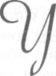
aptığım Açık Oturum konuşmasından
sonra Büyük Millet Meclisi'ndeki hava,
gözle fark edilecek kadar sertleşmişti. Hele: "kapalı oturum" istemem, konuşmanın daha da ağırlaşacağım gösterdiği için, milletvekillerinin bazılarında büyük tedirginlik vardı.
Başkanlık divanını işgal eden Gümüşhane
Milletvekili Fehmi Bey, kapalı oturum isteğimi oya
koydu ve kabul edildi. Az sonra tekrar kürsüde
idim.
Mecliste rahatsız edici bir sessizlik vardı. Bazı milletvekilleri, iki oturum arası sıradan sıraya geçmişler, görüşmeler yapmışlar, yorumlara girişmişlerdi.
Atatürk olup bitenleri dikkatle takip ediyordu.
Böyle elektrikli bir hava içinde konuşmaya
başladım. Konuşmanın anahatları, açık oturumda
69 • B İ L İ N M E Y E N A T A T Ü R K
yaptığım görüşmenin çizgileri içinde idi. Fakat,
hem daha teferruatlı bilgiler veriyor ve gizli yazışmaları açıklıyor, hem de Saray'a karşı giriştiğim hücumlarda Padişah Vahdettin'i hedef alıyordum.
Kullandığım kelimeler de sertleşmişti.
Nihayet İstanbul'daki Sultanı, "vatana ihanetle" suçlayınca, Meclis'te çok önemli bir etki-tepki havası yarattı; bu suçlama ilk olduğu için. Ben de
az sonra konuşmamı bitirip kürsüden indim.*
Bakanlıkta çalışıyorum, bir süre sonra telefon
çaldı. Açtım, Kılıç Ali Bey...
"Celal Bey, Meclise gel, iş büyüyor" diyordu.
O zamanlar Dışişleri Bakanlığı, şimdiki Merkez Bankası'nın bulunduğu yerde, küçük bir binada idi. Meclise çok yakındım. Hemen bir solukta Meclise geldim. Kapıdan girerken, Eskişehir Milletvekili Hacı Veli Bayraktarla karşılaştık. Abdest almaya gidiyordu, kollarını sıvamıştı. Karşılaşınca: Beni uyarmak istediği belli idi. Kendisine gülümseyerek Meclis'e girdim.
Milletvekilleri oy veriyorlardı, kimisinin elinde beyaz, kimisinin elinde kırmızı oylar vardı. Başkanlık Divanı'ndan söz istedim. Fakat Hasan Fehmi Bey, Başkanlık Divanı'ndan, "Sırası değil" anlamına gelen bir işaret yaptı. Neticeyi beklemeye başladım.
Meğer ben konuşmamı bitirip çıktıktan sonra,
lehte aleyhte ateşli konuşmalar yapılmış. En sonra
"Gensoru" Güvenoyuna vardırılmıştı. Birinci Büyük 7 0 • İ S M E T B O Z D A Ğ
Millet Meclisi'nde bakanlar teker, teker Meclis'e kar
şı sorumlu olduklarından, Meclis istediği bakanı tek
başına düşürebiliyordu. Konuşmamı beğenmeyenler
birleşmişler, beni Bakanlıktan düşürmeye karar vermişlerdi.
Oylama bitti. Oylar sayıldı. 60 kırmızı oya
rağmen Meclis ekseriyeti, benimle beraber olduğunu göstermişti.
Bakanlıktaki çalışmalarıma tekrar dönmek
için, Meclisten çıkmak üzere idim. Milletvekili olarak bir asker dostumla karşılaştık. Cepheden geliyordu, epey zamandır görüşmemiştik. "Hoş geldin"
demek için yanına yaklaştım. Beni çok soğuk bir tavırla karşıladı. Sonra:
"Biz, sizin gibi düşünmüyoruz, Celal Bey" dedi.
Hiçbir şey söylemeden yanından ayrıldım ve
Bakanlığa döndüm.
Fakat bu arkadaşlarımdan böyle bir söz beklemediğim muhakkaktı. Kendisini, fikirlerimize yakın bir arkadaş biliyorduk. Nitekim, yıllar sonra herkes Cumhuriyetçi olup, Cumhuriyetçilikteki kıdemi ile övündüğü günlerde, benim de bulundu
ğum bir toplantıda "Biz daha düşmana ilk kurşunu
sıkarken Cumhuriyetçi idik" diye konuşacak ve
"Celal Bey de bilir" diye beni şahit gösterecekti!
Cumhuriyet, bazılarının sandığı gibi, bir günde karar verilip ilan edilmiş bir rejim değildir. Çok uzun ve çetin bir köprüden geçilmiştir. Çeşitli mer-7 1 • B İ L İ N M E Y E N A T A T Ü R K
halelerde yapılan mücadeleler başarıya bağlanmasay-
dı, Cumhuriyet bir günde ilan edilebilir miydi?
Daha Kolağası günlerinde samimi bir Cumhuriyetçi olan Atatürk, Türkiye Büyük Millet Mechsi'nde, Halk İdaresi demek olan Cumhuriyete ilk kapıyı böyle açmıştı.
İşte bu dönemde, İstanbul Hükûmeti'nin, bir
barış iskandili yapmak için Batı'ya gideceğini öğrendim.
Önemlisi, Türk süngüsü istila ordusunu denize dökmeden ciddi bir barış yapmak mümkün-müş gibi İstanbul Hükümeti, Yusuf Kemal Bey'den
önce davranıp Paris ve Londra'da temaslara girişmek için yola çıkmak üzere idi. Ne tarafından baksanız bu davranış doğru olmayan bir hareketti.
Kalemi elime aldım, şifrenin cevabını yazıyordum ki, Atatürk içeriye girdi, haberi merak etmiş, yemeği bırakıp gemişti. "Nedir?" diye sordu, aldığım şifreyi kendisine uzattım. Okudu, başını
kaldırıp sordu: "Ne düşünüyorsunuz. Cevap verdiniz mı?.." Hazırladığım telgraf müsveddesini uzattım, okudu, "Tamam" dedi. "Çekildi mi?.." "Hayır"
dedim, "Siz içeriye girdiğiniz zaman henüz bitmek
üzere idi.", "İmza et, hemen çeksinler.."
Telgrafın metni mealen şu idi:
"Paris ve Londra'da temaslar yapmak üzere
hareket edeceğinizi öğrenmiş bulunuyoruz. İşlen-
72 • İ S M E T B O Z D A Ğ
mize karışmayın. Seyahate çıkmayımz. Düşüncemizin bu olduğunu bilmenizi dilerim."
Ben telgrafı imza ederken:
"Bunu İzzet Paşa'ya nasıl ulaştırabileceklerini
düşündünüz mü?.. Yarın gidiyorlarmış..." diye sordu. "Evet, dedim, İstanbul temsilcimiz yarın sabah Sirkeci garına gider, İzzet Paşa'ya telgrafı eliyle verir. Talimatı böyle yazacağım."
Uygun buldu ve dediklerimi yaptıktan sonra
birlikte çıktık. Ertesi sabah İstanbul temsilcimiz erkenden gara gitmiş ve telgrafı İzzet Paşa'ya vermişti. İzzet Paşa telgrafı okuduktan sonra, başıyla "Ne yapayım" anlamına gelen bir işaret yapmış, sonra
telgrafı katlayıp cebine koymuş.
Anadolu ajansı benim bu konuşmamı şöyle özetlemişti:
Ertesi günü Bakanlar kurulu Meclise noksansız gelmişti. Başkanlık Divanında Gümüşhane Milletvekili Fehmi Bey'den söz istedim ve kürsüye çıktım. Genellikle Meclis beni rahat dinlemiştir. Yine rahat dinlemeye başladı. Damat Ferit kabinesinden başlayarak güne kadar İstanbul hükümetlerinin ve sarayın güttüğü politika üzerinde durdum. Bu açık oturumda yaptığım konuşmanın özetini, 7 Mart 338 tarihli Anadolu Ajansı şöyle yayınlamıştı.
Ankara 7 Mart - Büyük Millet Meclisi'nin dünkü
içtimaında Hariciye Vekili Yusuf Kemal Bey'in İstanbul
yolu ile seyahati ve orada yaptığı temasları hakkında veri-73 • B İ L İ N M E Y E N A T A T Ü R K
len istizah takrirleri üzerine, Hariciye Vekaleti Vekili Celal Bey, mühim beyanatta bulunmuşlardır. Celal Bey beyanatında memleket menfaatlerine aykırı fiil ve hareketlerde bulunan Damat Ferit Kabinesi'nin düşmesinden sonra,
Tevfik Paşa Hükûmeti'nin iktidara geldiğini, kuvvetli bir iman, doğru bir fikir ve sağlam bir zihniyet sahibi olmadı
ğı görülen ve yaygın şöhretine dayanarak memleketin hayat ve istiklali namına bir rol oynamaktan ve arkadaşları ile birlikte düşmanların emel ve maksatlannı arkalayıp kolaylayarak, memleket içinde ülkü bakımından bir ayrılık doğuran, Sevr Muahedesi hükümlerine karşı açtığımız
mukaddes mücadeleyi zayıflatmaya ve parçalamaya yönelmiş çalışmalardan uzak kalmayan İzzet Paşa'nın, Sevr Muahedesi'ni bize kabul ettirmek maksadı ile Anadoluya geldim ve burada sözlü ve yazılı görüşmelerde Sevr Muahedesi'nin sonradan değiştirilmesine imkân bulunmadığını
söylemek ve Anadolu'yu da kendi düşüncelerine çekmek
istediğini tafsilat ile açıklamıştır.
Ardından, İzzet Paşa heyetinin Ankara'da yapılan
müzakereler sonunda siyasi tutumumuzu haklı bulduklarını, kendilerinin yanlış düşündüklerini kabul ve itiraf ile bizimle fikir beraberliği içinde dostları, arkadaşları vardı. Sevilen bir şahsiyetti. Kendisine ne suretle telkin edildiğini bilmiyorum. Fakat bir kaç gün sonra Ankara'dan ayrıldı ve bir daha ortalıkta görünmedi.
İşte size "Büyük Nutkun" bir tek cümlesinin arkasında kalan bazı gerçekleri anlattım. Atatürk belki Türkiye'de Cumhuriyeti ilk düşünen insan değildi. Fakat en büyük
7 4 . İ S M E T B O Z D A Ğ
Cumhuriyetçi idi. Halk idaresine ve halk iradesine inanmıştı. Daha Erzurum Kongresi'nde, esas fikirlerini çok sevdiği milletine bildirmişti. Bunu gerçekleştirmek için hiçbir fırsatı kaçırmadı, tersine bunlardan faydalanmasını bildi.
Atatürk millî iradenin pürüzsüz ve ortaksız olmasını
isterdi. Nur içinde yatsın!
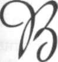
9.11.1969
Celal Bayar'dan dinlenmiştir.
üyük Taarruza yaklaşılmakta olduğu günlerde Meclis dalgalıydı. Mustafa Kemal Paşa'dan kuşku duyan bazı milletvekilleri
bir taraftan elinde bulundurduğu geniş salahiyetleri
kısıtlamaya çalışıyor, bir taraftan şeriatı bütün işlerde hâkim kılmaya çalışıyordu.
Kabinede, Şeriye Vekâleti vardı. Bazı sarıklı
Konya ve Eskişehir mebusları birleşerek bütün kanunların Şeriye Komisyonu'ndan geçtikten sonra kanunlaşması için Meclise bir takrir vermişlerdi.
Meclis'in ilerici kanadı, o gece Çankaya'da
toplandı. Hayli kalabalıktık. Fakat buna rağmen,
böyle bir konuda Meclisin oy çoğunluğunu elimizde tutamıyorduk.
O gece Mustafa Kemal Paşa konuşmadı, daha
çok bizi dinledi. Biz ne olursa olsun kanaatlerimizi
Meclis'te savunmaya ve takririn aleyhinde konuş-
76 • İ S M E T B O Z D A Ğ
maya kararlıydık. Atatürk de bizi hem haklı buluyor, hem fikirleriyle destekliyordu.
Sabaha karşı Çankaya'dan Ankara'ya inerken,
Hamdullah Suphi ile Meclis'te birlikte çalışmaya karar verdik.
Meclis toplandı, takrir okundu. Eskişehir
Mebusu ve Şeriye Vekili Abdullah Azmi Efendi,
uzun bir konuşma yaptı. Devri saadetten, Hazreti
Ömer adaletinden, şeriatın bütün ahkâmı ihtiva ettiğinden bahsetti ve bütün kanunların mecliste müzakere edilmeden Şeriye Komisyonu'nda şeriat bakımından incelenmesini istedi.
Bizim gibi ilerici bir mebus bilinen Edirne
Milletvekili Şeref Bey söz aldı. Biz kendisinden Abdullah Azmi Efendi'ye cevap vermesini beklerken, Abdullah Azmi Efendi'yi aynı hararetle desteklemez
mi!.. Şaştık kaldık.
Hamdullah Suphi dayanamadı ve oturduğu
yerden laf attı. Arkadaşı Şeref bey kürsüden kendisine cevap verdi: "Kabahat bende mi?.. Yanlış bellemişsin! Ben her şeyden önce Müslüman'ım."
Hele bu son sözler, Meclis'i iyice coşturdu.
Son ümidimiz Mustafa Kemal Paşa idi. Söz aldı ve
konuşmaya başladı.
Fakat şaşılacak şey!.
Şeref Bey nasıl bizim için bir sürpriz olmuşsa, Mustafa Kemal Paşa daha da büyük bir sürpriz oldu. Çünkü takriri destekliyor, İslamiyet'in kudsi-77 • B İ L İ N M E Y E N A T A T Ü R K
yetinden, devr-i saadet günlerim tekrar yaşayacağımızdan bahsediyordu. Biz İlericiler, perişan olmuştuk. Son güvendiğimiz insan Meclis'te son ve en büyük kozumuz olan Mustafa Kemal Paşa, kuvvet kar
şısında bizi terk ediyor ve gericilere yanaşıyordu.
Atatürk takririn kabul olunmasını tavsiye ettikten sonra, bu maksatla bir komisyon kurulmasını ve en yetkili ulemanın kuracağı bu komisyonun hemen çalışmaya başlayarak uygulamayı hazırlamasını istedi.
Oylar toplandı, takrir kabul ve komisyon teşkil olundu. Takririn en hızlı taraftarları, komisyon üyesi seçilmiştik. Atatürk'ün teklifi ile Komisyon üç
kişilik seçildi.
İlerici grup perişan olmuş, bütün ümitlerini
kaybetme noktasına gelmişti. Artık biz de Çankaya'ya gitmiyor, Atatürk'le karşılaşmak istemiyorduk. Çünkü bizi sattığına hükmediyorduk.
Atatürk, taktısyen gücünü bundan sonra
gösterdi. Komisyonun çalışması için, üç kişinin bir
araya gelmesi gerekliydi. Konya'daki kolorduya bir
şifre göndererek kendisine, Ordu'da dinî akidelerin gevşemekte olduğuna dair bir telgraf çekilmesini istedi. Telgraf gelir gelmez, Komisyon başkanını davet etti ve alınan kararın ne kadar isabetli oldu ğunu, Yeşil Ordu çalışmaları ile dini duyguların sarsılmış olduğunu ve Ordu'da ciddi çalışmalar gerektiğini anlatarak Komisyon Başkanı'ndan hemen 7 8 • İ S M E T B O Z D A Ğ
Konya'ya hareket etmesini ve Ordu'yu irşat buyurmasını rica etti.
Hoca büyük bir memnuniyet içinde, cübbe-
sini savurarak Konya'nın yolunu tuttu. Tabii komisyon çalışamıyordu. Konya'ya gönderdiği komisyon üyesinin dönmesine yakın, Batı Cephesi kumandanı İsmet Paşa'ya bir şifre göndererek bir
telgraf çekmesini istedi. O telgraf da gelince komisyonun ikinci üyesini Batı Cephesi'ne gönderdi.
Böylece oyalayarak zaman kazanıyor ve büyük taarruzu hazırlıyordu. Nitekim Büyük Taarruz'dan sonra komisyon üyeleri Meclis'te toplanmıştı ama,
artık teşebbüsü Mustafa Kemal Paşa eline geçirmiş
bulunuyordu.
12 Ekim 1972
Bayar'dan, İsmet Bozdağ,
Dr. Baha Akşit'le birlikte dinlenmiştir.
tatürk Mersin'de, eşi Lâtife hanımla birlikte, gecikmiş bir "Balayı" yaşıyordu.
Portakal bahçeleri ortasında kurulmuş
beyaz bir köşk, nefis bir güney baharı ve güzel bir
eş yetmiyordu Atatürk'e... Arkadaşlarını arıyordu.
Bu sebeple bir kaç arkadaşını davet etmişti. Çağrılanların arasında ben de vardım.
Mersin Limanı işini ele almıştı. Bu yüzden,
Bayındırlık Bakanlığı'ndan bir heyet de çalışmalar
yapmaktaydı. Birkaç gün sonra ayrılmama izin vermesini rica ettiğim zaman;
- Birkaç gün daha kal da sonra gidersin...
Yoksa, acele bir işin mi var?.. diye sordu. "Hayır"
deyince, bırakmadı, kaldım.
Atatürk, evliliğinin bu döneminde, çok düzenli bir hayat sürüyordu. Lâtife Hanımla da ilişkileri çok iyi idi. Az içiyor, sofrada az kalıyordu.
80 • İ S M E T B O Z D A Ğ
Bir gün, Siirt Mebusu Mahmut (Yaydan) Bey
geldi. O akşam sofrada şimdi adlarını hatırlamadı
ğım bazı kimseler de vardı.
Yenildi, içildi, konuşuldu, bu yüzden de sofrada biraz fazlaca kalındı. Tahmin ettiğime göre, vakit geceyarısını az geçe tavandan bir takım sesler gelmeye başladı.
Sanki üstümüzdeki salonda bir insan, tepmiyordu...
Avize sallanmaya başladı, herkesin başı tavana çevrilince, Atatürk konuşmasını, kesti; dinledi, sonra hiçbir şey olmamış gibi konuşmasına devam
etmeye başladı...
Fakat konuşmaya başlamasıyla bu sefer daha
şiddetli gürültüler gelmeye başladı!.. Neredeyse tavanın sıvaları dökülecek...
Atatürk konuşmasını tekrar kesti, tavana
doğru baktı; kızdığı zamanlar yaptığı gibi, dudaklarını oynatarak "hımmm" dedi. Sonra, sanki böyle bir gürültüyü duymuyormuş gibi yaparak konuşmasını sürdürdü. Az sonra da sofra sona erdi.
Sonradan öğrendim ki, o gürültüyü Latife hanım yapıyormuş!..
Kendisinin bulunmadığı sofrada Atatürk'ün
arkadaşlarıyla eğlenmesini kıskandığı için yapıyormuş bütün bunları...
Bu olaya o zaman şaşmıştım! Bu gün de kavrayıp hazmedebildiğimi söyleyemem... Belki niyeti 81 • B İ L İ N M E Y E N A T A T Ü R K
iyi idi ama, bu niyetin açıklanma biçimi iyi değildi.
Yanlış zarfa konulmuş bir mektup gibi...
İşte bugünlerde Atatürk Ankara'dan bir şifre
aldı.
Şifrede, Rum Patriği'nin İstanbul'dan sürülmesinin dünyada ve özellikle Yunanistan'da büyük yankılar yaptığı belirtiliyor, Yunan Hükûmeti'nin,
Türkiye'ye savaş açmak için, kabine toplantıları
yapmakta olduğu haber veriliyordu...
Şifrenin gelmesi ile, bütün konuşmaların
mihrakı Türk-Yunan münasebetleri oldu. Atatürk,
fikir açıklamıyor, daha çok söylenenleri dinliyor,
bazılarını eleştiriyordu.
O gün trenle Ankara'ya hareket ettik. Yol boyunca konu, yine Yunanistan'ın savaş açıp açmayacağı idi.
Atatürk, çevresindekileri dinlemeye devam
ediyor bazen dalıp gidiyor, sonra yine konuşmaları
izlemeye başlıyordu. Bir ara vagonun penceresinden baktığını, ancak yanında oturanın duyabileceği kadar yavaş bir sesle "hı, hı" diyerek düşüncesini geliştirdiğini gördüm.
Öğle yemeği için masaya oturuldu. Latife Hanım da baştaydı. Ben, sofranın Atatürk'ten uzakça bir yerine oturmuştum. Garson, yemekte ne içeceğimi
sordu, boş bulunup: "Bir bardak şarap" dedim. Benim şarap ısmarladığımı, o kadar uzaktan duymuş!
Bana seslendi:
8 2 • İ S M E T B O Z D A Ğ
- Olmaz, içemezsiniz!.. Zevk-u safa bitmiştir... Şimdi işin içindeyiz! Ne şarap, ne başka içki, içemezsiniz, efendim!
Hayatımda Atatürk'ten duyduğum ilk ve son
azarlanma!
Neye uğradığımı şaşırmışım: "Peki Paşam,
öyle olsun Paşam" demişim!
Atatürk, kaşlarının altından bana bakmakla
yetindi, ben de tabağıma eğildim, olay kapandı.
Atatürk'ün çalışırken ağzına bir damla alkol
koymadığını bilirdim. Fakat başkalarının içmelerine karışmazdı.
Anlaşılan, benimle çalışmaya kararlı olduğu
için, içmemi de engellemişti.
Gecenin geç saatlerine kadar, haritalar üzerinde çalışıldı, istasyonlara gelen şifreler çözüldü ve yatma zamanı gelince, herkes kompartımanlarına
çekildi, beni bırakmadığı için kaldım. Yine düşünceliydi. Bir takım hesaplar yapmakla meşguldü. Birden:
- Tamam! -dedi- isterse Yunanlılar savaş açsın! Yenilecekler!..
Yüzüne, soran ve hayran gözlerle baktım;
merak ettiğimi yüzümden okuyunca:
- Merak mı ettin, Çocuk!.. Çekerim Yunan'ı
Çatalca'ya kadar; orada kuşatır, ışını bitiririm!
Atatürk'ün o gün için bir zafer formülü olan
bu sözlerini bugün açıklamakta bir beis görmüyo-
83 • B İ L İ N M E Y E N A T A T Ü R K
rum; çünkü silahlar çok gelişmiş, yeni şatlar ortaya
çıkmıştır.
Bu iki komşunun çatışmasında, yalnız kendilerine yarar yoktur!..
Fakat bütünleşmesinde, Balkanlar için, hatta
dünya barışı için yarar olduğuna Atatürk de Ve-
nızelos da inanmıştı!
Nitekim bana, Balkan Paktı'nın temelini hazırlamak için, Yunanistan ile ekonomik bir anlaşma imzalama görevini verdiği zaman, söylediklerini hiç
unutmayacağım:
- Dünyanın karışması uzak değildir! Savaşı
Balkanlardan ve dolayısı ile Türkiye'den uzak tutmanın çaresi, bir Balkan Paktı kurmaktır. Önce Pakt'ın ekonomik zemini hazırlansın, sonra askerî
zemini kolay bulunur. Senin vazifen, bu ekonomik
zemini hazırlamaktır.
22.11.1981 Pazar
Doktor Mükerrem Sarol ile birlikte Celal Ba-
yar'da idik. Bayar, benim bir sorum üzerine ekonomi ile nasıl ilgilendiğini anlatırken, şöyle konuştu:
- Memuriyete Ziraat Bankası'nda başlamam
ve Doyçe Oriyant Banka devam etmem sebebiyle,
ekonomi ile ilgilenmem tabiidir. Çünkü ekonomik
olaylar içinde yaşıyordum. Ancak beni politikacı
olarak ekonomi ile ilgilenmeme götüren bir başka
sebep daha var: İttihat ve Terakki Cemiyetindeki
çalışmalarım sırasında, Kara Kemal diye bilinen, arkadaşlarınca "Küçük Efendi" diye tanınan Kemal Bey, İstanbul'da bazı şirketler kuruyor, halka ucuz
gıda ve malzeme sağlayan mağazalar açıyor ve Par-
ti'ye ayrıca ekonomi bakımından da yardımcı oluyordu.
Onun bu çalışmalarından ilham alarak ben
de Bursa'da bazı teşebbüslere girdim.
Mudanya ile İstanbul arasında çok hurda va-
85 • B İ L İ N M E Y E N A T A T Ü R K
purlar çalışıyordu. Halk gidip gelirken büyük bir sıkıntı çekmekteydi. İttihat ve Terakki'nin Bursa Başkanı olarak bununla ilgilendim ve "halkı para toplayarak Bursa adına bir vapur almaları" için ikna ettim.
O yıllarda Bursa'da Ticaret Mahkemesi'nin
bir hâkimi vardı: Mustafa Bey. Onu ikna ettim ve
hâkimlikten istifa etti. Bursa'nın ileri gelenlerini
toplayarak "Hüdavendigâr" adlı bir şirket kurduk.
Topladığımız para ile bir varup alındı ve adını "Başlangıç" koyduk. Mustafa Bey de bu şirketin müdürü idi.
Niyetim, vapurun kazancı ile yeni vapurlar
almak ve böylece devletin ulaşım politikasına yardım etmekti.
Ben İzmir'e Kâtibi Mesul olarak gittikten sonra, şirkette ihtilaf çıkmış, daha sonra da kapandığını işittim. İlk ekonomik girişimim, bu vapurculuk şirketi olmuştur
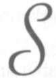
16.7.1972
Celal Bayar'dan dinlenmiştir.
ayın Celal Bayar'a, Falih Rıfkı'nın ÇANKA
YA kitabında İş Bankasının alacağını tahsil
edebilmesi için bazı kimselere milyonluk
komisyonlar aldırdığını yazdığını hatırlattım ve bunun iç yüzünü sordum. Bana aynen şunları anlattı:
- Çok yanlıştır. İş Bankası olarak biz kimseye
komisyon sağlamadık. Buna imkânımız da yoktu.
Olay şudur: Çolak İbrahim adlı bir eski arkadaşımız Orman Sanayii kurmak hevesine düştü.
Kendisinin tapulu bir ormanı vardı. Burada bir fabrika kurmak istiyordu. Biz Banka olarak memlekette sanayinin uyanmasına büyük bir ehemmiyet veriyorduk. İbrahim Bey bize müracaat etti. İşini tetkik ettirdik. Müspet rapor aldıktan sonra, kendisine bir miktar kredi açtık. Bu açtığımız miktar 2 0 0 . 0 0 0
lira civarında idi.
Fabrika kuruldu. Çalışmaya başladı. Fakat
türlü şanssızlıklar, işletme hataları yüzünden fabri-
8 7 • B İ L İ N M E Y E N A T A T Ü R K
ka zarar etti. Biz Banka olarak işe el koyduk. İbrahim Bey bana geldi. Fabrikayı satmak istediğimizi işittiğini söyledi ve borcunu ödemek imkânı oldu
ğunu da açıklayarak satmaktan vazgeçmemizi istedi.
Biz kimsenin işini batırmak istemiyorduk.
Kendisine borcunu nasıl ödeyeceğini sordum. Bana:
- Belçika'da bir fabrikanın adına devlet ihalesine girdiğini ve kazandığını, işini bitirdiği zaman, devletten para alırken, kendisine bir milyon tutarında komisyonunu da ödemeyeceğini, Banka olarak bu komisyona el koymamızı söyledi.
Evrakı tetkik ettim, gerçekten Fabrika İbrahim Bey'e bir milyon tutarında bir komisyon vermeyi kabul ediyordu. Hemen Maliye Bakanlığı'na durumu bildirdim ve şirkete para ödenirken bizi
haberdar etmelerini istedim. Biz de vadesinde parayı tahsil ederek Banka'yı zarardan kurtardık. Olay budur.
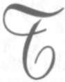
2.8.1980
TRT yapımcısı Olcay Göker'le
birlikte dinlenilmiştir.
urhal Şeker Fabrikası'nı yapıyorduk. Memleketin şekere ihtiyacı vardı. Fakat gazetelere kadar yansıyan bir muhalefetle karşı-
laşmıştım.
En büyük muhalefet Bakanlar Kurulundan
ve Başbakan İsmet İnönü'den geliyordu! Atatürk,
yapılmasını arkalıyor, İnönü, nedense, girişimi engellemeye çalışıyordu. Ben, konuşulanlara cevap vermeden, işi yürütmeye bakıyordum.
Bu sırada, Bakanlar Kurulu'nun birinde konu
gündeme getirildi. Maliye Bakanı Abdülhalik Renda
ve Tekel ve Gümrükler Bakanı Ali Râna Tarhan
açıkça muhalefete geçtiler. Maliye Bakanı ile Gümrükler Bakanı aynı noktada ittifak etmişlerdi:
- Türkiye'de yapılacak fabrikanın şeker maliyeti, bizim dışarıdan ithal edeceğimiz şekerden daha yüksek olacak. Bu durumda, makinelerin sipari-8 9 • B İ L İ N M E Y E N A T A T Ü R K
şı için hem dışarıya döviz vereceğiz, hem dışarıdan
gelen şekerden aldığımız gümrük resminden zarar
edeceğiz; hem daha pahalı şeker yapmak için, ucuz
şeker almamak gafletine düşeceğiz!.. Bundan vazgeçmek lazımdır...
Abdülhalik Renda ile Ali Râna Tarhan'ın gündeme getirdikleri bu konuyu, İsmet İnönü de açıktan bir şey söylemekle beraber, genel davranışı ile destekler görünüyor ve benim teşebbüsten vazgeçmemi bekliyordu.
Ekonomiden bu kadar habersiz bir tartışmanın
içine girmek mümkün değildi. Biz fabrikanın makinelerini sipariş etmiş, binasını yapmış, hatta, çevredeki müstahsille pancar mukaveleleri imzalamıştık.
İnönü'nün benim yüzüme bakarak cevap beklediğini
görünce, elimdeki kalemi masaya fırlattım ve:
- Bu seviyede bir konuşmanın tartışmasına
girmekte mazurum, dedim.
Büyük bir sessizlik oldu. İnönü başka konuya geçerek bahsi kapattı. Aradan bir süre geçti. Bir gün İnönü, Bakanlığıma geldi. Kendisini karşıladım. Yapılan işler hakkında kendisine bilgi verirken, şeker fabrikası işine de temas ettim. İnönü, sanki bunu bekliyormuş gibi, yumuşak bir yüzle
bana baktı ve yumuşacık bir sesle sordu:
- Bu işten vazgeçemez misin?
Kestirip attım:
90 • İ S M E T B O Z D A Ğ
- Böyle bir sorumluluğun altına giremem,
emrederseniz, ayrılayım!
Telaşla mukabele etti:
- Yok, yok!.. Ben sadece düşünceni öğrenmek
istedim.
Turhal Şeker Fabrikası, işte böyle kuruldu.
ATATÜRK'ÜN SON BAŞBAKANI
Dr. Mükerrem SAROL ile birlikte
Celal Bayar'dan dinlenmiştir.
17.9.1972
"Başvekilsiniz Celal Bey"
ize Atatürk'ün Başvekâleti nasıl tevdi etti
ğini anlatır mısınız, Beyefendi?
- Başvekâleti mi?. Siz beni 10 Kasımda
politika üzerinde mi konuşturmak istiyorsunuz?
Polemiğe pek elvermez. Zaten hiçbir özelliği yoktur. Diyebilirim ki, Başvekil olduğumu galiba en son ben öğrendim!
Ama istiyorsanız, anlatayım size...
1937 Eylülünde Dolmabahçe'de Dil Kurultayı vardı. Kurultay münasebeti ile İstanbul'a gelmiştim. Sabahleyin, davet saatinden beş on dakika önce Dolmabahçe'ye gittim.
Hiçbir şeyden haberim yoktu. Fakat Atatürk'ün İstanbul'a geldiğini bildiğim için, kendisine bir "Hoş geldiniz" demek istiyordum. Bazı Kurultay üyeleri ile selamlaşıp görüşerek Atatürk'ün dairesı-
92 • İ S M E T B O Z D A Ğ
ne doğru yürümekte idim. Ali Çetinkaya ile karşılaştım.
Ali Çetinkaya arkadaşımdı. Beni görünce biraz telaş ve heyecanla koluma gidi. Benim bir şeyden haberli olmadığımı, hemen fark etti. Gayet samimi bir şekilde bana dedi ki:
- Celal Bey, hemen Atatürk'ün yanına gidin,
bekliyorlar. Size bir şey teklif edecek. Sakın reddetmeyin. Memleketin hayrınadır.
Ben, ne "teklif edilecek şeyi" sordum, ne "kabul edip etmeme" üzerinde herhangi bir beyanda bulundum. Elini sıktım ve yürüdüm.
Atatürk'ün bulunduğu salona geldiğim zaman,
kapı açıktı, içeri girdim. İçerde, Atatürk'ün her zamanki yakın arkadaşları vardı. Yüksek sesle bir şeyler konuşmakta idiler. Ben salonun ortasında ayakta
durdum. Birden sessizlik oldu. Atatürk arkadaşlarına
yüksek sesle:
- İşte kendisi de geldi, dedi. Vazifeyi tevdi
edelim, alıp yürütsün...
Sonra bana döndü:
- Başvekilsiniz Celal Bey, tebrik ederim, başarılar dilerim..
O gün milletvekili ve Kurultay üyesi olarak
girdiğim salondan, Başvekil olarak çıkıyordum. Bu
olayın, benim yönümden işleyen realist hikâyesi
budur!
93 • B İ L İ N M E Y E N A T A T Ü R K
Atatürk'ün özelliğine değmeyen konuları burada size anlatmak istemem. Başvekil olarak hastalığından ne suretle haberdar olduğumu anlataca
ğım.
"Düşündüğüm Gibi ise
Durum Vahimdir"
Ankara'da Balkan Konferansı toplanmıştı.
Kabul resminde, o zaman Yugoslavya Başvekili olan
Doktor Stoyadinviç'le konuşuyordum. Yanıma İçişleri Bakanı Şükrü Kaya yaklaştı. Yüzü kederli, âdeta mosmordu.
- Hayrolsun, dedim.
- Sıhhiye müsteşarı Doktor Asım'ı gördüm,
dedi. Atatürk'ün sağlığı etrafında çok endişe verici
şeyler söylüyor. Üzüldüm. Siz de bir görüşseniz.
Şükrü Kaya'ya misafir Başvekil'le meşgul olmasını rica ettim. Stoyadinoviç'ten de bir kaç dakika için özür diledikten sonra Doktor Asım'ı buldum.
- Atatürk'ü istasyonda gördüm, dedi. Doktor
olarak durumunu beğenmedim. Arkadaşları da burnunun kanadığını söylediler. Ben kanamanın burundan olduğunu sanmıyorum. Bir ciğer kanaması olması, görünen ahvale göre, akla daha yakın. Eğer böyle ise, durum vahimdir, diye fikrini özetledi.
Dünya başıma yıkıldı sandım. Geceyi güç ge
çirdim.
94 • İ S M E T B O Z D A Ğ
Sabahleyin erkenden Çankaya'ya gittim.
Başyaver, henüz uyandığını söyledi. Kendilerinden, beni giymemeden kabul etmelerini rica ettiğimi bildirdim. Maksadım, dinlenmelerine engel olmamaktı. Çünkü biliyordum ki, Atatürk, derin nezaketi olan bir insandır. Bütün münasebetlerinde ölçülüdür. Çok yakın arkadaşlannı bile giyinmeden, tıraş olmadan karşılamaz. Nitekim ricamı kabul etmişler, giyinmemişlerdi ama, yine de yataktan kalkmış, şezlonga geçmiş, mümkün mertebe derli toplu görünmeye dikkat etmişti.
Odaya girince bana gülümseyerek baktı ve:
- Hayrolsun, ne var? diye sordu.
- Hastalığınızı merak ediyorum, dedim. Yorulmanızdan endişe ediyorum. Bana iki yabancı uzmanı salık verdiler. Çok yetkili kimselermiş. Eğer izin verirseniz, kendilerini Türkiye'ye davet etmek
ve sizi görmelerini sağlamak istiyorum. Bunu ricaya
gelmiştim.
Kaşlarını hafifçe çattı, biraz düşündü. Böyle
bir davetin politik akislerini hesapladığı belli idi.
- Ortalıkta Hatay meselesi var. Hastalığım,
dışarda duyulursa iyi olmaz. Bu noktayı değerlendirmek lazımdır. Sen, Neşet Ömer'le konuş.
Burda zaten Tıp Kongresi yapılıyor. Gelip bir
muayene etsinler, gerekli ise bir konsültasyon
yapsınlar. Bakalım onlar ne diyecek? Sonra düşünürüz.
95 • B İ L İ N M E Y E N A T A T Ü R K
Sevgili Atatürk!.. Söz konusu olan canı oldu
ğu hâlde, memleket davalarına uzaktan yakından
bir zarar gelmemesini düşünüyor, yabancı doktorların çağrılmasını sakıncalı buluyordu.
Tam İstirahat, İçki ve Sigara Yok
Doktorlar geldi. Atatürk'ü dikkatle muayene
ettiler. Konsültasyon yapıldı. Ben, varılacak sonucu
bekliyordum. Neşet Ömer Bey'e sordum:
- Vardığınız netice nedir?
- Kritiktir, karşılığını verdiler. Yapılacak ilk
iş, tam istirahat sağlanması, derhal içki ve sigarayı
bırakması ve ilaçlarını düzenli alması gerekir.
Atatürk'ün, her çeşit engellemeleri reddeden
bir tabiatı vardı. Bir anda içki ve sigarayı bırakması,
morali üzerinde büyük bir sarsıntı yapabilirdi. Kaygılı ve ricakâr bir sesle doktorlara:
- Sizi anlıyorum dedim. Fakat Atatürk'ün ruhi hâlini de göz önünde bulundurmanızı rica ederim. Bu zaruret kesin de olsa, bunu kademeli olarak uygulayamaz mıyız? Mesela içki için bir süre koyabiliriz... İki ay, üç ay... Sonra uzatırız... Sigarayı da azaltarak maksada yürümek mümkün değil midir?..
Moralini ayakta tutmanın hastalığı bakımından sizce bir önemi varsa, böyle davranmanızı tavsiye ederim...
Doktorlar, anlayış gösterdiler ve ittifakla, en
büyük faktörün moral olduğunu, bu sebeple de ka-
96 • İ S M E T B O Z D A Ğ
demeli engelleme yolunun uygun olacağını kabul
ettiler.
Odasına girdik. Doktorlar müşahedelerini
açıklıyorlar, takip edilecek tedaviyi anlatıyorlar ve
perhizi tarif ediyorlardı. İçki ve sigaraya gelince,
Atatürk birden başını kaldırdı:
- Ne demek?.. Yani bütün ömrümce mi içmeyeceğim?.
Atatürk'ün mavi, kocaman gözleri parlıyor, bu
tavsiyenin altında yatan gerçeği anlamaya çalışıyordu. Yüreğime bir ateş dolduğnu hissettim. Utanmasam ağlayacağım. Öylesine güçlü, öylesine diri, öylesine hayat ve yaşama şevki dolu bir insanın, yatağa mıhlanmasını ve her şeyden vazgeçmesini istemek...
Doktorlar:
- Hayır dediler... Sadece üç ay için.. Belki bu
müddet daha da kısalabilir.
Atatürk, geniş bir nefes aldı ve yüzüne rahatlamanın pembeliği geldi:
- O bir şey değil.. Kabul ettim!
Hepimiz ferahlamıştık...
Nöbet Başvekil'de
Doktorlar, reçetelerini yazdılar ve gittiler.
Onların nöbeti bitmiş, benim nöbetim başlamıştı;
ve benimkisi taşınmayacak kadar ağırdı.
Cumhurbaşkanı'nın sığlığını korumak, Başvekil olarak bana bir yasa emri idi. Sonra bu Cum-97 • B İ L İ N M E Y E N A T A T Ü R K
hurbaşkanı Türkiye Cumhuriyeti'nin kurucusu, koruyucusu, yücelticisi, fikir ve ilham kaynağı ATATÜRK'tü.
Hiçbir şey için karşısına çıkmama imkân olmayan bu büyük adamın karşısına, sağlığı nedeniyle çıkmam gerekebilirdi. Hayran olduğum, emrinde olmakla iftihar ettiğim, hudutsuz sevdiğim bir insandı bu... Görevimi, Başvekil olarak güç de olsa yapabilirdim. Ama bunca sevdiğim insan olarak nasıl yapacaktım?.. Bir şimşeği elimde tutmak, Atatürk'ü tutmaktan kolaydı.
Atatürk'ün Okuyamadığı Son Nutuk
Atütürk'ün hastalığı, bahar gökleri gibi, bir,
günlük güneşlik oluyor, hepimiz sevinip bayram
ediyoruz; bir, kararıp şimşekleniyor, kederlere karılıyoruz, böyle sürüp gidiyordu. Sağlığının günlük güneşlik günlerinden biri idi. Savarona'dan Dolmabahçe'ye geçtiği ilk haftalardı. Ziyaretine gitmiştim.
Görüşme sırasında birdenbire:
- Bana Meclis'i açış nutkumun materyalini
hazırlayın, dedi.
- Emredersiniz, takdim ederim, diye karşılık
verdim.
Büyük Millet Meclisi anayasa gereğince
ekimde açılır ve Cumhurbaşkanı ilk celsede geçen
bir yıl içinde yapılmış işleri değerlendirir, gelecek
yıl yapılmasını temenni ettiklerini de Hükümet ça-
9 8 • İ S M E T B O Z D A Ğ
lışmalarına ışık tutmak için belirtirdi. Atatürk bu
nutuklarını daima büyük bir dikkat ve ehemmiyetle hazırlamıştır. Fakat nutkun söylenmesine çok zaman vardı. Daha ağustosta idik. Önümüzde bir,
birbuçuk aylık zaman vardı.
Anlıyordum ki, Cumhuriyet'in on beşinci
Bayramında ve Meclis'in açılışında yapacağı konuşmaya büyük bir önem veriyordu.
Gereken hazırlıkları yaptım. Bakanlıklardan
notları topladım. Bu günlerde yine kendisini bir ziyaretim sırasında yeniden aynı konuya döndü:
- Benim nutkun materyali ne oldu?. (Bakanlıkların hazırladıkları çalışma raporlarına Atatürk
"MateryaPder, nutkun son paragrafına da "final"
demeyi severdi.)
- Hazır, dedim. Fakat bir kere de ben gözden
geçirmek, ayırıp tasnif etmek istiyorum. Ondan
sonra takdim ederim.
Durdu, yüzüme baktı, gülümsedi:
- Peki, dedi, siz bildiğiniz gibi hazırlayın. Ben
nasıl olsa Ankara'ya gideceğim. Orda ayrıca elden
geçirir, kendi üslubuma çevirip kaleme alırım. Fazla yorulmamak için kısa tutarım Celal Bey, merak etme!
Nutuk üzerindeki çalışmaları yoğunlaştırdım. Notlardan nutkuna aktaracağını tahmin etti
ğim parçaları da üslubuna yakın bir dille yazıp, fazla yorulmamasını sağlamaya çalışıyorduk.
9 9 • B İ L İ N M E Y E N A T A T Ü R K
"Ankara'ya Gideceğim!"
Hastalığı sebebiyle İstanbul'da kalması lazımdı, fakat Atatürk ikide birde Ankara'ya gitmeye kalkıyordu. O zaman, bir taraftan doktorlar, bir taraftan yakın arkadaşları, bir taraftan ben onu İstanbul'da kalmaya ikna etmek için elimizden geleni yapardık. Bir gün yine bu konuyu doktorlarla tartışırken, Başyaver, benim Ankara'dan İstanbul'a
gelmekte olduğumu haber vermiş... Atatürk hemen:
- Gördünüz mü, demiş. İşte Celal Bey geliyor. Ya beni Ankara'ya götürmek için geliyorsa? Ya benim Ankara'da bulunmamı istiyorlarsa?..
Atatürk o günlerde hastalığının günlük güneşlik süresini geçiriyordu, onun için "Gidebilir mi, gidemez mı?" diye konuşulduğu olurdu. Ben doğru
Dolmabahçe'ye gittim ve kendilerini ziyaret ettim.
Hemen nutuk çalışmalarını sordu:
- Ne oldu?..
- Hazır efendim, dedim. Emirlerinizi bekliyorum.
- Güzel... Göreyim öyle ise...
Notlara bakarak, nutuka girmesini uygun
bulduklarımı özetledim. Hükümetin gelecek yıl için
tasavvurlarını da kısaca arz ettim.
- Tamam, olmuş, dedi, sonra özellikle gelecek yıl yapmayı düşündüğümüz işler üzeinde durarak, bunları meclise "vesaya maddeleri" hâline ko-100 • İ S M E T B O Z D A Ğ
yan kalem çalışmaları yaptı. Nutuk, esas itibarıyla
artık hazırlanmış demekti. Bana:
- O hâlde bunu Genel Sekreterliğe verelim,
orada bulunsun, dedi. Sonra Ankara'ya gitmek konusu üzerinde konuşmaya başladı. Cumhuriyet Bayramı'nda yapılacak geçit resminde bulunmak için, Devlet Başkanı yerine merdivenle çıkıldığından, yorulmamak için bir asansör yapılmasını istedi, Meclis'te nutkunu okurken, hem oturmasını, hem de ayakta
duruyormuş gibi görünmesini sağlayacak uygun bir
kürsü yapılmasını ısmarlamayı da unutmadı.
Besbelli idi ki, Ankara'ya gideceği günleri iple çekiyordu. Oysa daha ekimin başlarında idik.
Ben Ankara'ya döner dönmez, hem asansör işini,
hem kürsü işini tamamlamıştım. Ama bu sıra Atatürk'ün sağlık gökleri yine kararıp şimşeklenmişti.
Artık Ankara'ya gitmekten söz etmiyordu. Ekimin
son haftasında yine yanında idim. Sordu:
- Nutuk bizde, Hasan Rıza'da değil mi?
- Evet Efendim.
Işıkları puslanmış gözleriyle bir ara daldı,
sonra dudaklarını bükerek:
- Bu hâlimle Ankara'ya gitmekte bir fayda
görmüyorum. Ankara'ya gittikten sonra, hiç değilse,
trenden otomobilime kadar, kimsenin yardımına
muhtaç olmadan yürüyebilmeliyım, arkadaşlarımla
sohbet edebilmeliyim.. Bunu yapamayacak olduktan sonra değmez.
101 • B İ L İ N M E Y E N A T A T Ü R K
Sonra bir süre daha durup düşündükten
sonra:
- Ankara'ya gitmeyeceğim. Nutka son şeklini veriniz, göreyim, dedi. Emirlerini yerine getirdim. Ancak hastalığı her gün biraz daha ağırlaşı-
yordu. Doktorlar beş dakikadan fazla konuşmasına izin vermiyorlardı. Uygun bir zaman arıyordum. Fakat Ulu Hasta, vazifesini unutmamıştı. Bir
gün haber verdiler:
- Atatürk sizi istiyor. Nutkunu ve Ordu'ya
mesajını da beraber getireceksiniz!
Cumhuriyetin Onuncu Yıldönümü'nde
Türk milletine mesaj yayımladığı hâlde, 15. yıldönümünde Ordu'ya mesaj yayımlamak istemişti.
Genelkurmay Başkanı Sayın Fevzi Çakmak mesajın taslağını hazırlamış bulunuyordu. Hemen istediklerini alıp odasına girdim.
Yatağın içinde uzanmıştı. İnce bir yorgan
göğsüne kadar çekilmiş, arkasındaki hafif meyilli
yastıklara yaslanmış duruyordu. Eliyle, yanına
yaklaşmamı istedi. Sandalyeyi yatağa bitiştirerek
oturdum.
- Nutuk ne oldu?
- Hazır efendim, dedim ve yavaş yavaş özetlemeye başladım. Doktorlar, yalnız beş dakika yanında kalmama izin vermişlerdi. Oysa bir Devlet Başkanı, en önemli görevini yapacaktı. Buna rağmen beş
dakika içinde nutku ana çizgileri ile arz ettim.
102 • İ S M E T B O Z D A Ğ
Büyük bir sükûnet ve dikkatle dinledi. Sonra
birdenbire:
- Okumayacak mısın? dedi.
Çaresiz nutku okumaya ve mümkün olabildiği kadar hızlı okumaya başladım. Büyük bir dikkatle ve ayrıntıları değerlendirerek dinliyordu.
Okuma biter bitmez, onun konuşmasına fırsat vermeden:
- Eksik olan finaldir, dedim.
Yüzüme baktı. Yorgun gözleriyle gülümsü-
yordu.
- Şimdi tamamlarız! dedi.
- Ben söyleyeceklerini yazmak için kalemi elime aldım. Bekliyordum.
- Yaz, dedi. BÜYÜK KAMUTAY, ŞİMDİYE
KADAR OLDUĞU GİBİ, BUNDAN BÖYLE DE, BÜ
TÜN İŞLERİNİZDE BAŞARILAR DİLERİM.
Bu cümle ile nutuk bitmişti. Ayağa kalktım,
veda etmek için hazırlanıyordum. Bırakmadı.
- Peki, dedi, bu nutku benim yerime nasıl
okuyacaksın?
Atatürk Meclis nutuklarını, Meclis Başkan
kürsüsünden okur. Ben onun yerine okuyacağıma
göre, nereden okumayı düşündüğümü soruyordu.
- Başkan celseyi açacak, bana söz verecek.
Teşkilatı Esasiye Kanunu'nun 36. maddesine göre,
Cumhurbaşkanının senelik nutuklarını Başvekillerine okutmak salahiyeti vardı. Ben de "Emirleri üzerine nutuklarını okuyorum" diyeceğim.
103 • B İ L İ N M E Y E N A T A T Ü R K
Atatürk memnun oldu. Gülümsedi.
- Tamam oldu, dedi. Çıkmak için küçük bir
hareket yaptım. Bu sefer, Meclis'te ve Parti grubunda tüzük gereği yenilenmesi gereken Başkan seçimleri için ne düşündüğümü sordu. Geleneğe uygun davranılacağını söyledim. Değişikliği gerektiren bir
hâl yoktu.
- Öyle yapınız, dedi. Sonra ekledi. ARKA
DAŞLARIMA BENİM SELAM VE MUHABBETLERİ
Mİ SÖYLEMEYİ UNUTMA!
Kapıda ayak sesleri duyulmaya başladı. Bana
verilen süreyi çok aşmıştım. Veda için elimi uzatırken bu sefer:
- Bilançoyu zengin buldum, dedi. Memleket
için hayırlı, muvaffakiyetli işler başarıldığını gördüm. Seni ve vekil arkadaşlarını tebrik ederim.
Sağ eli yorganın dışında duruyordu. O dünyanın en güzel ve hastalıktan büsbütün incelmiş ellerini, bu EN BÜYÜK TÜRK un elini iki elimle kuş
okşar gibi tuttum, yeryüzününün en büyük tazim
ve sevgi duyguları ile öptüm ve yanağımı yasladım.
Ağlıyordum.
Ben Başvekilliğimi, O, Cumhurbaşkanlığını
unutmuş gibiydik. Konuşmuyorduk. Artık kelimelerin bir değeri kalmamıştı. Gözlerimle, gözlerinden veda işaretini alarak ayrıldım.
27.10.1972
Dr. Ahmet ve
Nilüfer Gürsoy ile
iç kimse yaşamasının ve hareketlerinin
sınırlandırılmasından hoşlanmaz. Fakat
Atatürk nefret ederdi. Doktorların yap
tıkları tavsiyeden, gururu incinmiş gibi bir hâli var-
dı. Bir kaç gün içmedi ama, salık verildiği biçimde
sırtüstü de yatmadı, devlet işleriyle yakın ilgisini
kesmeden oturduğu yerde çalışmaya devam etti.
Ben ve yakın arkadaşları iyice görüyorduk ki,
bu şartlar içinde hastalığın geçmesine imkân yoktu.
Doktorlarımız, gereken ihtimamı fazlasıyla yaptıkları, ilaç ve perhiz üzerinde pek haklı olarak titizlendikleri hâlde, sevilen, tapılan bir hastaya duyulan şefkat, gereken otoriteyi kurmalarına imkân bırakmıyordu.
Sadece bu sebeple, bir yabancı doktoru, Atatürk'ü tıbbi otoritesine alarak tedavisini sağlaması için memleketimize davet etmeye karar verdim.
Başka bir çare göremiyordum.
105 • B İ L İ N M E Y E N A T A T Ü R K
"Ne Yapacaksan Çabuk Yap, Ben Hastayım"
Bir gün bu maksatla odasına girdim. Oturuyordu. Rengi uçuktu. Gözlerinin şimşekli maviliği buğulanmış, bulutlanmıştı. Yine de sağlam ve neşeli
görünmeye çalışıyordu. Mümkün olabildiği ölçüde
yumuşak ve ikna edici bir sesle kendisine:
- Yabancı doktorların gelmesini ve sizi muayene etmesini rica ettiğim zaman, reddetmiş ve böyle bir çağrının Hatay Davası üzerine tesir edece
ğini ileri sürmüştünüz. Politik yankıları bakımından haklı olduğunuzu kabul ederim. Ancak bu mahzur çok sınırlıdır. Kaldı ki bugün bizim için en
büyük dava, sizin sağlığınızdır. Türk milletinin
sağlığınızdan öte bir kaygısı olmadığını arz etme
vazifemdir. Lütfen izin verin de bir yabancı uzman
getirelim, konulan teşhisi bir kere daha kontrol etmiş ve tedavi şeklini gözden geçirmiş olsun.
İnce parmaklı sanatkâr elleri koltuğun iki yanında, başı hafif öne eğik, sükûnetle dinledi. Bir müddet sustu. Sonra başını kaldırarak gözlerimin
içine baktı:
- Çocuk!.. Ne yapacaksan çabuk yap, anlıyorum, ben hastayım!..
Beni hem yaralayan, hem sevindiren bir sözdü bu... Hiçbir kuvvetin karşısında teslim olmayan Atatürk, kendisini tıbba teslim etmeye razı oluyordu. Dışımdaki Başvekil Celal Bayar, Cumhurbaşkanının karşısında saygı ile susuyor, içimdeki dost 106 • İ S M E T B O Z D A Ğ
Celal Bayar, hasta şefinin güzel ellerini iki avucu
içinde tutarak gözyaşları ile ıslatıyordu.
"Bu İşin Komutanı Benim,
Bana Yardım Edeceksiniz!"
Durumu Bakanlar Kurulu'nda konuştuk ve
Doktor Fizenje yi davet etmeye karar verdik. Çağırdık, geldi. Atatürk'ü ince bir muayeneden geçirdi.
Dr. Fizenje'nin mesleğini iyi bilmekten gelen bir güveni ve rahatlığı vardı. Muayene bittikten sonra, bir Devlet Başkanı ile değil, bir hasta ile konuşur gibi
hemen, şunları söyledi:
- Hastasınız! Ben sizi iyi edeceğim. Fakat
benden önce, siz kendi kendinizi iyi edeceksiniz!
Siz büyük bir kumandan olabilirsiniz, büyük zaferler kazanmış olabilirsiniz... Fakat bu işin kumandanı benim. Yardımınızı istiyorum, bana yardım ede-cesiniz!..
Atatürk Fizenje'yi tetikte ve dikkatle dinliyordu. Bilgisinden emin, açık ve güvenli konuşması Atatürk'ü etkilemişti. Son cümleleri dinlerken, bundan hoşlandığını fark ettim. O da tıpkı bir savaşta kendisinden yardım bekleyen bir komutana yardım vadeder gibi sağlam bir tonla:
- Yaparım! dedi.
Hastayı kazanmanın, tedavinin yarısı olduğunu yine doktorlardan işitmiştim. Fizenje bunu ba
şarmıştı. Atatürk'e teşekkür etti ve şöyle devam etti:
107 • B İ L İ N M E Y E N A T A T Ü R K
- Benim tayin edeceğim zamana kadar alkol
yok! Fazla kıpırdamadan şezlongda sırtüstü yatacaksınız. Bu durumunuzu hiçbir suretle bozmayacaksınız. Yemek içmek üzerindeki tavsiyelerimi de tutacaksınız!..
Doktorun dediklerini de gerçekten harfi harfine tuttu. Ağzına bir damla içki koymadı, sigara içmedi ve iki gün sırtüstü kıpırdamadan yattı. Bu ka-darcık itina, hemen kendisini gösterdi. Kuvvetli
bünye, iyileşmek iradesinin de yardımı ile toparlanıyordu.
Bütün bu süre içinde dışardan görünüşü sakindi. Fakat içinden kaynadığını hissediyordum.
Sık sık yaptığım ziyaretlerde, Devlet işlerinin dışında haberlerle kendisini oyalamaya çalıştığım hâlde, o bana ısrarla Devlet işleri üzerinde sorular soruyor,
hele Hatay konusunda en küçük ayrıntıyı bile öğrenmeye büyük önem veriyordu.
Bir süre sonra, şezlongda kıpırdamadan sırtüstü yatmaktan sıkıldı. Doğrulup oturmaya, daha daha, odasında yer değiştirmeye başladı. Bir yaralı
aslan tedirginliği içinde olduğunu görüyordum. Bununla beraber, bu kısa perhiz ve dinlenme sağlığına çok iyi gelmişti. Bir süre sonra, yüzüne tatlı bir pembelik, mavi gözlerine o eski şimşekli ışıltı oturdu.
Bir gün "iyiyim" dedi, ayağa kalktı.
Eskiden olduğu gibi devlet işleriyle ilgilenmeye, hele Hatay konusunda titizlenmeye başladı.
108 • İ S M E T B O Z D A Ğ
Akşamları yine sofrasını kurduruyor, arkadaşlarını etrafına topluyor, onlarla sohbet ederek geç vakitlere kadar oturuyordu.
Ben ve yakın dostları içmemesini, bu mümkün olmazsa, az içmesini sağlamaya çalışıyorduk.
Fakat bu da bir sınıra kadar mümkün olabilmekte
idi.
"Hatay'ı Alacağız"
Bir kaç gün sonra, hiç hasta olmamış gibi hareket etmeye başladı. Hükümetin kesif şekilde çalıştığı Hatay Davası'nı, en ince teferruatına kadar elinde tutuyor, Beni daha enerjik olmaya zorluyor, Mersin'e giderek davayı yakından izlemek istiyordu. Doktorlarla görüştüm. Yeniden muayene ettiler ve "gidebilir" dediler. Gitti.
Sırtüstü yatması, dinlenmesi ve hiç yorulmaması lazımken, otomobille Mersin'i yer yer dolaştı.
Bir büyük geçit töreni tertip ettirdi. Bir buçuk saat
bu töreni ayakta seyretti. Bütün bu hareketler, memlekette ve dünyada büyük yankılar koparıyordu.
Gelen haberlerden sağlığı bakımından memnun oluyorduk. Çünkü kilo aldığını bildiriyorlardı.
Demek hastalığını yenmiş, bunca zahmetli harekete
rağmen kilo almaya başlamıştı. Sevinilecek bir şey
gibi göründü bize. Oysa karaciğer su toplamaya
başlamış. Kilonun artması bundanmış... Bu da hiç
hayır alameti değildi.
109 • B İ L İ N M E Y E N A T A T Ü R K
Bu kilo almanın sebebini, ancak Atatürk İstanbul'a döndüğü zaman öğrenebildik. Kendisi, hiçbir şeyi olmadığını söylüyor, Savarona'da bir kaç
gün dinlenirse, dipdiri olacağını umuyordu. Yazık
ki, bu umduğu çıkmadı. Hastalığı her gün biraz daha ilerliyordu. Dolmabahçe Sarayı'na geçirildiği zaman, iyice güçten düşmüştü.
"Doktorlar Doğruyu Söylemiyorlar"
Dolmabahçe'de bir koma atlattı. Uzun zaman kendine gelemedi. Doktorlar ümidi kestiler!
Telaşa düştük. Hemen İstanbul'a hareket ettim.
Ben gelene kadar bir mucize olmuş ve komayı atlatmıştı. Kendisine geldiği zaman, Ülkü'yü ve beni görmek istemiş. Besbelli ki doktorlardan hiçbir şey
öğrenemediği için Ülkü'nün ağzından laf kapmak,
benden bir haber sızdırmak istemişti. Ülkü'yü sıkı
sıkı tenbihledik. Sevgili Atatürk Ülkü'nün ağzını
arayınca, Ülkü yüzüne bakıp ağlamaya başlamış.
Ülkü'den sonra ben girdim. Bana ilk sözü:
- Sen cuma günü gelecektin, ne oldu. Neden
daha önce geldin. Yoksa sağlığımda üzülecek bir
şey mi var?.. Merak mı ettin sen de?..
- Vahim bir şey yok... Fakat uykunuz her zamankinden biraz fazla sürmüş onu merak ettik.
Doktorlar uykunuzda bir düzensizlik farketmişler..
- Neymiş bu uykudaki düzensizlik?..
- Derin ve uzun uyumuşsunuz.
110 • İ S M E T B O Z D A Ğ
- Yani?.. Kaç saat uyumuşum?
- On iki saat kadar...
Oysa koma, yirmi saatten fazla sürmüştü,
saklamaya çalışıyordum. Fakat o sırada elini çenesine atıp sakallarının uzunluğunu fark etseydi, kendisine doğru söylemediğimi anlayacatı. Çünkü Atatürk bütün hayatı boyunca olduğu gibi, hasta iken de her gün muntazam tıraş olurdu. Komaya girdiği
için tıraş olamamış ve yüzünü fırça gibi sert ve beyaz kıllar kaplamıştı.
İki yana başını salladı. Sonra:
- Doktorlar doğruyu söylemiyorlar... dedi.
17.8.1972
Celal Bayar'dan dinlenmiştir.
tatürk'ün komaya girdiği günlerde, bütün
kabineyi Dolmabahçe'de bir toplantıya ça
ğırmıştım. O toplantıdan çıkarken, Millî
Savunma Bakanı Kâzım Özalp'e, İsmet Paşa'nın yakın
arkadaşı olduğunu bildiğim için:
- Görüyorsunuz... Durum kesindir. İsmet Pa
şa acaba neden bir ziyarette bulunmak istemez.
Kendisine bir söylesen...
Kâzım Özalp:
- Atatürk acaba kendisini kabul eder mi?.. Siz
kabul ettirebilir misiniz?
- Ben, kabul edeceğinden eminim. Şahsen de
rica edebilirim.
- Öyle ise, Paşa'ya haber vereyim..
Ankara'ya döner dönmez İsmet Paşa'ya durumu bildirdi. İsmet Paşa:
- Celal Beyin şahsi fikri ne?.. demiş.
112 • İ S M E T B O Z D A Ğ
- Kendisi bu teklifi yaptığına göre, bu görüşmeyi arzu ediyor demektir.
İsmet Paşa bir süre düşündükten sonra:
- Giderim, fakat trene istasyondan binmem,
Orman Çiftliği'nden binerim. Hemen bavulumu hazırlasınlar. Ve çiflik istasyonuna götürsünler.
Paşanın bavulu hazırlandı ve emrindeki muhafız polis tarafından Orman Çifliği'ne götürüldü.
İsmet Paşa bir ara:
- Bir de Refik Saydam m fikrini alalım, der ve
Refik Saydam'ı köşke çağırırlar. Refik Saydam:
- İmkânı yok gidemezsiniz Paşam, diye heyecanla cevap verir. Bunlar sizi bu komplo ile Saraya çekecekler ve orada yok edecekler. Razı değilim!
Eğer siz o trene binerseniz, lokomotifin önüne yatarım, beni çiğnemeden İstanbul'a gidemezsiniz!. der.
İsmet Paşa gitmekten vazgeçer ve bavulunu
geri aldırır.*
Sayın Celal Bayar; şöyle konuşuyor:
Atatürk'ü ziyaret için gitmiştim. Nisbeten iyi görünüyordu. Odada şu anda hatırlamadığım başkaları da vardı.
Nasıl oldu, bilmiyorum birden söz seçimlere atladı.
Atatürk:
- Seçimler için ne düşünüyorsun Celal Bey? dedi.
Seçimler, gerçekten yaklaşmaktaydı. Ancak, Atatürk'ün bu hastalığı sırasında seçimlerle kendisini yormak istemiyordum:
113 • B İ L İ N M E Y E N A T A T Ü R K
- Daha biraz vaktimiz var, dedim fakat siz ne emrederseniz, o olur.
- Yapabilir misin?..
- Muktedirim!
Atatürk biraz durdu, düşündü, sonra:
- Dursun, ilerde düşünürüz... dedi."
***
Bu konuşmada bir çok ipucu var: Önce Celal Bayar
gibi hafızası sağlam bir devlet adamı, Atatürk'ün yanında, Seçim gibi son derece önemli bir konu konuşulurken odada kimlerin olduğunu unutacak soydan bir kişi değildir.
Demek kimlerin bulunduğunu söylemek istemiyor.
Niçin söylemek istemesin?. Eğer söylenmesinde sakınca olmayan kişiler olmasaydı, saklamazdı.
Söylenmesi sakıncalı kişiler kimler olabilir?.. Atatürk'ün yatak odasına girebilen bu kişiler kimler olabilir ve söylendiği takdirde, ya orada bulunduklarından ötürü, ya da konuyu aydınlatacaklarından, birtakım yorumlara yol
açacaklarından ötürü adları saklanmış bulunsun!..
Konu seçim olduğuna göre, bu kimselerin Parti ile,
Seçimle ilgili kimseler olması gerek.
Demek en azından milletvekili, bakan. Atatürk'ün
yatağı başında bulunduklarına göre, Atatürk'ün yakın çevresinden olmaları gerekli...
Peki, hem milletvekili ya da bakan, hem Atatürk'ün
yakın çevresinden kimler var?.. Salih Bozok, Kılıç Ali, Hasan Rıza Soyak, Şükrü Kaya, Tevfik Rüştü Aras...
114 • İ S M E T B O Z D A Ğ
Peki, siyasi kuliste bu kişilerden kurulu bir Atatürkçü gruptan söz edilmiyor mu?. Ediliyor. Bu grubun, yeni bir seçim yapılarak İsmet İnönü'nün Meclis dışı edilmesi hazırlıkları içinde oldukları, İsmet Paşa grubu tarafından ileri sürülmüyor mu?.. Sürülüyor.
Öyle ise Bayar'ın bulunduğu o toplantıda bu grup fikirlerini Atatürk'e açmışlar, "İsmet Paşa'sız bir Meclis" fikrini kabul ettirmişler, Atatürk de bunun üzerine orada hazır bulunan Bayar'a sözü edilen bu seçimi sormuştur.
Nitekim Bayar'ın cevabı anlamlıdır: "Daha biraz vaktimiz var, ama siz ne derseniz o olur."
Fakat anlaşılan Atatürk'ün "diyeceğinin olacağına"
fazla güveni yoktur; sorar: "Yapabilir misin?.." Bu ikinci sorudan da seçimin normal bir seçim olmadığı iyice anlaşılıyor." İsmet Paşa taraftarlarına rağmen, bu adamlarla beraber, İsmet Paşa ve yakın adamlarını dışlayarak bir seçim yapabilir misin?" sorusunun sorulduğu meydana çıkıyor. Bayar buna "muktedirim" diye karşılık veriyor ama, Atatürk o kanıda değildir: "Dursun, ilerde düşünürüz" diyor, demek üzerinde bolca düşünülmesi gerekli bir seçimdir bu...
Atatürk'ün son günlerinde İsmet Pasa için bazı tertiplerin yapılması gerektiğine inandığına dair deliller, belirtiler vardır.
Falih Rıfkı Atay ÇANKAYA'sında şunları yazıyor:
"Atatürk'ün kendisini de bir 'halef vârisine meylettirmek isteyenler olmuştur, kendileri hesabına. Atatürk, kendisinden sonrasına kendisinin hâkim olamayacağını bilirdi."
115 • B İ L İ N M E Y E N A T A T Ü R K
Atay'ın bu sözlerinin, Kılıç Ali Bey'in ölümünden bir
kaç ay önce kendisini ziyarete gittiğim zaman gösterdiği
'Atatürk'ün Vasiyeti" diye kırmızı yazı ile yazılmış bir zarfın bulunmasıyla gerçekliği pekişmiş oluyor. Gerçi Kılıç Ali, hayattayken bu konuyu bütün ısrarlara rağmen saklamış ve gerçeğin anlaşılmasını, ölümünden sonraya bırakmıştır
ama, bu siyasi vasiyetin ne olabilirliğine ip uçları bırakmıştır.
Bu noktada şu sorunun karşılığını arayalım: İsmet
İnönü, Cumhurbaşkanı olduktan sonra kimlerin siyasi hayattan, hatta Ankara'dan uzaklaştırılmasını istemiştir? Şükrü Kaya, Tevfik Rüştü Aras, Kılıç Ali, (bir süre yüzlerine gülüp ellerindeki mektupları aldıktan sonra) Salih Bozok, Hasan Rıza Soyak. Bunların arasında Celal Bayar yok... Çünkü vasiyet oyununa girişenlerin içinde de yoktu! Adlarını saydığımız bu kişiler, ellerini kollarını bağlayarak İsmet Pa
şa'nın iktidara gelmesini bekleyemezdi.
Çünkü, Şükrü Kaya ile; Başbakanlıktan ayrıldıktan
sonra kendisini polisle takip ettirdiği için;
Tevfik Rüştü Aras ile; Niyon Konferansı'nda sözünü
dinlemediği, kendisini Atatürk ve Meclisle çatışmada bıraktığı için...
Kılıç Ali ile;
Salih Bozok ile; Başbakanlıktan düştükten sonra Hi-
podrom'da kendisine halkın gösteri yapması vesilesiyle
meclise verdiği bir takrirle, kendisini uzun açıklamalara çektiği için...
116 • İ S M E T B O Z D A Ğ
Hasan Rıza Soyak ile; Atatürk Orman Çifliği'ndeki
Bira Fabrikası ihtilafiyle kendisi ile Atatürk'ün arasını açtığı ve Çankaya'da Hasan Rıza'yı Kara Tahsin'e bezetmesinden
ötürü...
Bu saydığımız kişiler, Atatürk'ün en çok sevdiği,
üzerlerine titrediği kişilerdir. Bunlar kendisine gelmiş ve
"Atatürk'e bir hâl olursa, kendilerinin de intihar etmekten başka çareleri kalmayacağını" söylemişlerse; ayrıca İsmet Paşa'nın kindarlığı üzerinde durmuşlar, memlekete bu
yüzden hayrı dokunmayacağı gibi, ödlekliğinden ve duraksamalarından ötürü milletin çok zahmet çekeceğini de anlatmışlarsa; Atatürk'ün hem bu kimseleri korumak, hem
memleketi bir buhrandan kurtarmak için İsmet Paşa'nın
-eski bir arkadaşı olmasına rağmen- ülke dışına çıkarılmasına razı olması ihtimali büyüktür.
Bunu, bir yandan erken seçimle temin etmek, yani
İsmet Paşa'yı Meclis dışında bırakmak, diğer yandan siyasi bir vasiyetle güçlendirmek akla yakın bir ihtimaldir.
Bu ihtimalin kuvvetli olduğunu perkiten bir başka delil, Atatürk'ün Vasiyetnamesi'nde İsmet Paşa'nın çocuklarına aylık bağlamasıdır. Eğer İsmet Paşa, kendisinin yerine Cumhurbaşkanı olacaksa, çocuklarına aylık bağlamanın anlamı yoktur. Elbette Paşa, kendi çocuklarının eğitilmesi için gerekli paraya her zaman sahip olacaktır.
Fakat tasarlandığı gibi, bir seçimle Meclis dışında bırakılacak olursa, kendisine dışarıda bir vazife verilse bile, paşanın gitmek istememesi ihtimali vardır. Bu takdirde el-117 • B İ L İ N M E Y E N A T A T Ü R K
bette sıkıntıya düşecektir. Bu durumda hiç değilse çocukları bundan zarar görmemelidirler...
Şimdi vardığımız yerden olaylara bakılınca, Atatürk'ün İsmet Paşa'nın çocukları için aylık tahsis etmesi garabeti aydınlanmış olur.
Ancak siyasi vasiyetin muhtevası, yine karanlıktadır.
Hayatta iki kez bu gerçeği çözebilecek pozisyonda bulundum; fakat maalesef, ikisinde de duraksamalarım yüzünden bu sırrı çözemedim. Birincisi, Kılıç Ali'nin evindeki; üzerinde ATATÜRK'ÜN VASİYETİ yazılı sarı zarftı. Üç yerinden kırmızı balmumu ile mühürlenmiş olan bu zarfın, ölümü hâlinde bana teslim edilmesini karısına benim yanımda vasiyet ettiği hâlde, Altemur Kılıç'ın babasının cenazesi toprağa verilmeden eve girerek babasına ait ne varsa hepsini toplayıp götürmesi yüzünden bu vasiyet yerine getirilememiştir.
Altemur, önce bu zarfı inkâr etmiş, daha sonra da,
'Evde bir sürü eski Türkçe evrak var, babamdan kalma, ama ben eski harfleri bilmediğim için bunların ne olduğunu bilmiyorum" demek suretiyle vasiyet zarfının hâlâ kendisinde olabileceği intibaını vermiştir.
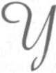
H. Köymen ile
birlikte dinlendi.
Derin Komadaki Atatürk'ün
Baş Ucunda Yapılan Son Kabine Toplantısı
apılacak bir şey kalmamış. Tıp ilmi, Atatürk'ün yaşamasından ümidini kesmişti. Aldı
ğımız bütün bilgiler bunu teyit ediyordu.
Başvekildim.
Hükümet olarak Büyük Millet Meclisi'ne kar
şı sorumlu idim.
Her hafta cuma günleri İstanbul'a gidiyor,
Atatürk'ü ziyaret ediyor, yakın bilgi sahibi olduktan
sonra pazar günleri dönüyordum. Bu ziyaretlerim
bütün hastalığı süresince devam etti. Eğer hafta arasında umulmadık bir gelişme olursa, ziyaret günlerinin değiştiği oluyordu. Gittiğim çoğu günlerde kendisini, rahatsız edilmeyecek kadar hasta buldu
ğum için, hükümet işleri üzerinde gerekli bazı isti
şareleri yapamıyor, onun imzasını gerektiren günlük işleri yürütmekte güçlük çekiyordum.
Anayasaya Göre
Anayasanın 33. maddesine göre, Cumhurbaşkanı işleri göremeyecek kadar hastalandığı za-119 • B İ L İ N M E Y E N A T A T Ü R K
man, yerine Meclis Başkanı'nın vekâlet etmesi gerekti. Gerçekte Atatürk, komaya girip çıkan ağır bir hasta idi. Ancak Atatürk gibi bir insanın sağlığında
yerine Meclis Başkanı da olsa vekil olarak vazifeye
başlaması, memleket içinde ve dışında büyük yankılar yapabilirdi. Ayrıca Atatürk'ün komadan kurtulması hâlinde yerine vekilin işe başladığını duyması, hastalığını daha da şiddetlendirir ve bu onun ölümüne sebebiyet verebilirdi. Oysa bu ağır hastalıkta tek ümit, "moral gücü" idi.
Telefonla Ata'nın yeni bir komaya girdiğini
bildirdiler, hemen İstanbul'a gittim. Durum bu defa büsbütün vahim görünüyordu.
Sorumluluğu bir başıma taşımamak ve durumu Bakanlar Kurulu kararına bağlamak üzere, Meclis Reisi'nin ve bakanların İstanbul'a gelmelerini rica ettim. Maksadım, Atatürk'ün durumunu kendilerine göstermek ve bu konuda bir karar vermelerini istemekti. Geldiler.
Atatürk'ün Baş Ucunda Kabine Toplantısı
Meclis Başkanı Abdülhalik Renda ve bakan
arkadaşlarım Dolmabahçe Sarayı'nın Başyaver odasında toplandık. Toplanma sebebini anlattım. Anayasanın emirlerini, Vekilin vazifeye başlamasının muhtemel mahzurlarını saydım. Ve kendilerine bir
teklifte bulundum, dedim ki:
- Bu anlattığım sebeplerle Abdülhalik Bey'in
vekil olarak vazifeye başlaması bazı mahzurları ihti-
120 • İ S M E T B O Z D A Ğ